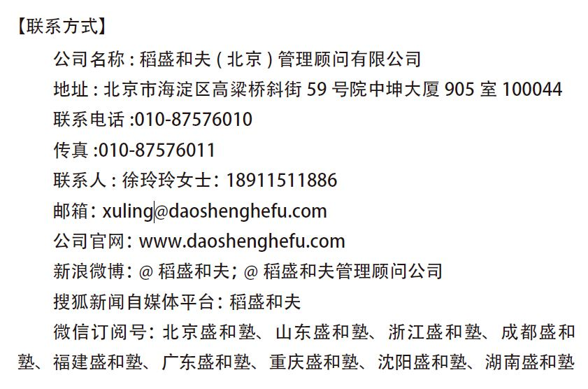
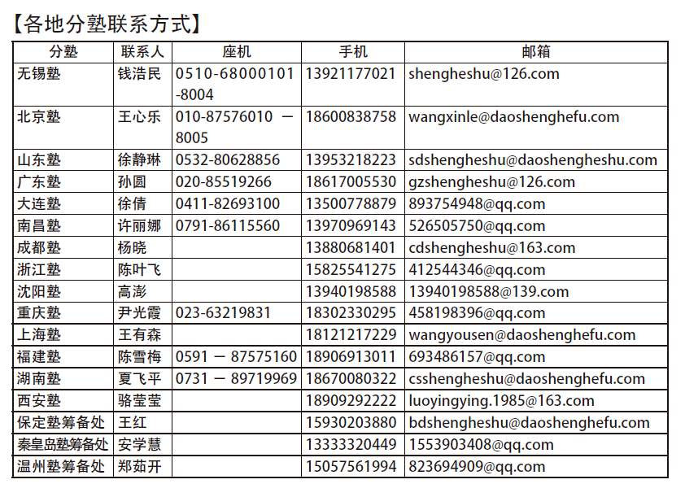

稻盛和夫是一位传奇人物。他出身是科学家，25岁时在精密陶瓷领域内就有划时代的发明创造。但他出名却是企业家，稻盛27岁时开始创业，赤手空拳40年间创建了京瓷和KDDI两家世界500强企业。然而，我认为稻盛先生本质上是哲学家，而且是一位彻底追求正确思考和正确行动的哲学家。科学家、企业家、哲学家，一身而三任，这在人类历史上是空前的，在当今世界上是唯一的。
稻盛先生65岁时从经营第一线引退后，将心血倾注于“盛和塾”及“京都奖”等公益活动上。13年后的2010年2日1日，在日本政府再三恳请之下，稻盛先生以78岁高龄毅然出任破产重建的日本航空公司的董事长，仅仅一年就让日航起死回生，并创造了日航60年历史上最高的利润，这个利润还是当年全世界727家航空企业中的最高利润。
传奇人物的身上又增添了一笔浓重的传奇色彩。
然而，让稻盛先生成为传奇人物的稻盛哲学却丝毫没有任何神秘的色彩，恰恰相反，这种哲学十分朴实，用稻盛先生自己的话来说甚至有点“幼稚”。这种哲学，每位企业家，甚至每个人都能掌握，都能实践。当你读完稻盛先生的《干法》一书以后，我相信你自己就能得出上述结论。
读《干法》这本书的时候，我有一种发自灵魂深处的强烈感动，为了与读者分享这种感动，我不仅翻译了这本书，而且觉得应该借此书中文版出版的机会，将我读此书、译此书时心灵上所受的冲击，以及我自己的感悟和实践告诉读者。
《干法》从字面上讲，似乎是讲述如何有效工作的方法，但其实这本书的重点，并不是讲具体的工作方法，而是论述位于工作方法前面的问题。它着重阐述人生观中的“劳动观”“工作观”，而这个问题具有重大而深刻的现实意义。
你想获得事业的成功和人生的幸福吗？如果你想这样，稻盛先生告诉你，这很简单，但前提是你必须热爱自己的工作。“热爱”这个词，稻盛先生又常常用“喜欢”“迷恋”这类词汇来表达。
如果你不喜欢、不热爱你当前的工作，那么在多数情况下，你得马上改变你的心态，哪怕是强迫自己改变。
如果你热爱自己的工作，你就会全身心投入。如果你全身心投入，就会产生良好的工作结果，你这种工作态度和工作结果不但能获得周围人的肯定，而且会让你从内心感到满足并产生自信。而这又会成为动力，激励你更努力地投入工作……这样的良性循环，不仅是成功的必要条件，从某种意义上讲，它甚至就是成功的充分条件。因为这种良性循环可以改变你的命运。
这就是稻盛先生最重要的人生经验之一。转变自己的心态，从不喜欢自己的工作到喜欢、热爱乃至迷恋自己的工作，稻盛的命运就从这里开始发生了戏剧性的变化。
我很幸运，2001年10月28日这一天，我在天津第一次见到了稻盛和夫先生，从此与稻盛和稻盛哲学结下了不解之缘。
当时我自己已经有了多年经营企业的经验，但在经营和人生中有许多困惑。在接触稻盛和稻盛哲学的一瞬间，我有一种豁然开朗的感觉，所谓“众里寻她千百度，蓦然回首，那人却在，灯火阑珊处”。我觉得稻盛先生将人生和经营的基本问题都讲清楚了，讲透彻了，而且他做出来了，做得近于完美。在现实世界中，我还从未见过像稻盛这样纯粹而且思想深刻的人。凭直觉，我感到稻盛先生可以成为自己的精神导师，稻盛哲学就是我一直寻找的人生真理。
同年12月我专程拜访了位于京都的京瓷公司，购买了稻盛先生的全部著作，订购了自创刊以来所有的《盛和塾》杂志。
我在天津会议上发表的论文《百术不如一诚》，在天津会议后写给稻盛先生的信《解读稻盛成功方程式》，以及2004年寄给稻盛先生的《关于实事求是：读稻盛先生〈企业人所见中国之现状〉及〈中共中央党校讲演要录〉有感》等文章，受到稻盛先生的称赞，并在日本《盛和塾》杂志上陆续刊载。
我多次赴日本参加日本“盛和塾”全国大会（后称世界大会）和塾长例会，并有机会经常向稻盛先生当面请教。2006年我所著《稻盛和夫成功方程式》一书在中国出版后，又被译成日文，经稻盛先生亲自推荐，在日本出版并畅销。在2007年3月30日中文版《京瓷报》上，稻盛先生评价此书道：“正是透彻理解京瓷哲学的非京瓷人所著，所以很值得参考。”
2007年我与无锡许多志同道合的企业家一起筹建了中国首家“盛和塾”——“无锡市盛和企业经营哲学研究会”。同年7月2日，稻盛先生率领日本盛和塾120位企业家来无锡举办开讲式。
2008年2月，为了配合胡锦涛主席访问日本，中央电视台《对话》栏目，准备制作专题节目“中国制造和日本制造”，他们希望邀请稻盛先生作为日方主嘉宾参加节目的录制。受该栏目导演的委托，我出面邀请稻盛先生获得成功。2009年4月受有关方面的委托，我又赴日本，当面邀请并说服稻盛先生6月9日到清华大学、6月10日到北京大学、11月2日到“中外管理第18届官产学恳谈会”上发表讲演，均获成功。
近年来，我翻译了稻盛先生的著作《你的梦想一定能实现》《干法》《活法》《敬天爱人》《坚守底线》《心法：稻盛和夫的哲学》《燃烧的斗魂》《稻盛和夫的实学》《阿米巴经营》《成功激情》《调动员工积极性的七个关键》以及稻盛先生与梅原先生合著的《拯救人类的哲学》共12本书，编译了《在萧条中飞跃的大智慧》《六项精进》《经营十二条》《经营为什么需要哲学》《心灵管理》《领导者的资质》《稻盛和夫语录100条》7本书，审译了《活法叁：人生的王道》，并为各书写了推荐序言。同时，这7年来，我还翻译了稻盛来华以及每年在盛和塾世界大会上的全部讲演文稿。应出版社要求，我夜以继日，只花了3个星期就写出了《稻盛和夫记》——稻盛和夫60个哲理故事，初版2万册当即被当当网一家买断。
2010年，由稻盛先生亲自提议的稻盛和夫（北京）管理顾问有限公司正式成立，我担任董事长。由于公司干部员工齐心协力，由于全国“稻盛迷”的全力配合，我们成功召开了稻盛和夫经营哲学北京报告会，青岛、广州、大连、重庆、成都以及杭州报告会，2015年5月还要召开3000人规模的稻盛和夫经营哲学上海报告会。每次报告会场面火爆，好评如潮。这几年中，中央电视台采访稻盛先生达7次之多，节目播出之后，影响深远。
我今年已经69岁，每天工作12~15个小时，星期天、节假日也不例外。除公司内部工作，翻译工作外，有时一个月乘飞机十余次，应邀去各大企业和各地盛和塾，宣讲稻盛哲学和阿米巴经营，解答企业家们的问题，有时连续讲解五六个小时。如此大的工作量，家里人、企业同事、周围的朋友、日本友人都为我的健康担忧。但因为稻盛哲学和实学是正确经营企业的强大思想武器，受到广大企业家发自内心的热忱欢迎。所以工作虽然忙碌，我却总是乐在其中，并不感到过度疲劳。因为带着紧迫感和紧张感，所以往往精神充沛，信心十足，真是“不知老之将至”。我想，这么重要的工作居然落到我的头上，我居然似乎尚能胜任，这让我感到格外荣幸，抱着一颗感恩之心，我内心的充实和满足难以言表。
我想，无非是因为我对这项工作的热爱燃起了我的激情，而且使这种激情持续不断。我在亲身实践中领会了稻盛先生在《干法》中阐述的这个道理。
一位著名的德国汉学家说：“没有翻译就没有新中国，因为没有翻译，马克思主义就无法传进中国。”这是强调翻译重要性的一句很中肯的话。
翻译要达到信、达、雅的境界，译者至少要具备四种能力，即外语能力、母语能力、理解能力和表达能力。除此之外，有时甚至还涉及译者的人格、治学作风以及心灵的状态。
译者只能按自己的理解来翻译原著，往往文字上似乎译出来了，但作者的思想却译不出来，有时甚至把作者的原意弄颠倒了。
有时即使理解了，但要把理解的意思用文字准确、流畅、恰如其分地表达，仍然颇费思量。表达不到位、不充分，不足以带给读者感动乃至震撼，但用词过了头，又在瞬间减弱甚至失去了作者观点原本具备的说服力。
我的经验是，不理解或原意吃不准时，可以查阅资料，可以请教别人，甚至请教作者或作者周围的人。但如何将原著的精神如实表达，译出神韵，让读者易于理解，并有阅读快感，却常常让我绞尽脑汁，费尽心思。
经常出现这样的情况：读了作者一段精彩的话，备受感动，但因为文化的差异，用中文如何表达，却手足无措，很是焦急。但是，既然热爱这项工作，我就不敢怠慢，不敢敷衍，无论如何必须把作者的思想忠实地传递给读者。这样一种强烈的愿望似乎会进入潜意识，让我在散步时，洗澡时，睡觉醒来时，甚至如厕时，头脑里灵光一闪，出现神来之笔，我因此会心一笑。当这一节翻译完成后，对照翻译前的窘态，我自己也会吃惊，我竟能译得如此酣畅淋漓。
我很喜欢辛弃疾的词：“我看青山多妩媚，料青山看我应如是。”当稻盛的著作融入我的心中时，当我的心融入稻盛的著作之中时，当自己和自己的工作对象融为一体时，灵感就会油然而生。
常常出现的这种小小的灵感，虽然同稻盛先生开发划时代的新产品时上苍赋予他的灵感不可同日而语，但在翻译和平时的工作实践中，我也深切体会到了稻盛先生有关热情可以激发灵感这个重要的思想。
稻盛哲学的精髓可以用“提高心性，拓展经营”这句话来表达。所谓“提高心性”，稻盛先生又常用磨炼灵魂、净化心灵、提升理念、陶冶人格、扩展器量等说法来替代。
这里又出现一个因果循环：只有提高心性，才能拓展经营；反过来，只有在拓展经营的实践过程中才能提高心性。
换言之就是：比完成活儿更重要的是完善干活人的人格。但是干活人的人格必须在干活中才能提升和完善。
“工作造就人格”。要全身心投入当前自己该做的事情中去，聚精会神，精益求精，这样做就是在耕耘自己的心田，就可以造就自己深沉厚重的人格。
用真挚的态度，正面面对生活、工作、经营中的现实问题，绝不逃避，拿出勇气，用良知去应对解决，这个过程本身就是提高心性。
稻盛先生说：“回顾自己人生的每一天，其实就是通过经营实践，不间断地提升自己心性的每一日。”
我在平时的工作中，特别在传播稻盛哲学和阿米巴经营的过程中，对这一点有特别深刻的感受。
热爱工作，投身事业，在这个过程中，抑制私心，陶冶人格，鼓足勇气，贯彻正义，这样才能获得周围人们由衷的信任和尊敬。
在急功近利的世风中传播稻盛的利他哲学，好比“向沙漠中洒水，在急流中打桩”，需要有明确的信念、强烈的愿望、坚定的意志和甘愿付出自我牺牲的勇气。
我把传播稻盛哲学看作自己的天职。稻盛先生说：“天职需由自己创造。”而这项事业的最高报酬不是别的，就是磨炼自己的灵魂，使它在人生谢幕之时比开幕之初高尚一点点。
天道酬勤。只要热爱工作，只要抱着纯粹的动机、强烈的愿望，付出不亚于任何人的努力，就能感动上帝，获得天助。因为这种态度符合天道，与天地宇宙的意志相一致。
稻盛先生在谈到日航重建成功时说：“看到我奋不顾身的样子，神灵、上天，或者说是自然，因感动而向我伸出了援助之手。如果不是这样，日航如此奇迹般的回升是根本不可能的。这不是人的力量，只能说是Something Great，即某种‘伟大之物’在发挥作用。这种‘伟大的存在’让我参与了日航重建，并援助推动重建工作取得了卓越的成功。”
稻盛哲学在中国的传播也开始出现类似的现象。中国已经出现了一批实践稻盛敬天爱人哲学的优秀企业。“一灯照隅是国宝”，一个行业中只要出现一家这样的企业，就能影响整个行业的风气。“一灯照隅，万灯照国”，如果每个行业都出现这样的企业，就可能改变整个商业文明的走向：从利己的文明走向利他的文明。
这不但是可能的，而且是必然的。因为这就是天意。违背天意，人类将没有未来。
2015年2月5日
本书的原著于2009年4月在日本出版以后，立即成为畅销书，并连续占据排行榜前列。出版后不到一年，接连再版，获得年轻读者们广泛的支持。
我写这本书是出于对日本社会变质的深刻忧虑。第二次世界大战以后，日本从废墟中奋起，经济快速增长，成为世界第二经济大国。但是，人们在赞叹物质富裕的同时，却丧失了最重要的价值观，而正是这种价值观才从根本上支撑了日本经济的发展。
这里所说的价值观指的是劳动观，就是对工作的基本观念。工作在人的一生中占的时间最多，人们在工作中学到的东西也最多。但是，现在许多人却找不出在工作这一尊贵的行为中所包含的目的和意义。
因此，多年来，在日本的年轻人中逃避工作的倾向逐渐严重。比如，在年轻人中，不想认真干活，靠打零工糊口，无固定工作的自由职业者急速增加，这已经成为一个很大的社会问题。
另一方面，由于泡沫经济的消极影响，在理应承担起当今社会责任的这一代年轻人中，将“流汗工作”视为美德的社会风气逐渐淡薄，而不劳而获，想靠投机赚大钱的恶劣风潮却在逐年增强。
这种劳动观、价值观的变化，伴随日本劳动人口的减少，再加上人们劳动热情的降低，不仅招致日本国际竞争力的下降，而且对日本这个国家的成长和发展也投下了阴影。
这样下去，日本将会国将不国。所以，就在今天，必须对劳动，对工作，从根本上重新审视。
将劳动、工作的目的和意义及其方法告诉年轻的一代。抱着这样的使命感我执笔直书。
我认为，上述观点对于取得惊人的经济发展的中国而言，也具有同样的参考意义。据说，中国在伴随经济增长而来的急剧的社会变动中，产生了一些不好的社会现象。今后中国要持续高速的经济增长，要成为全球第一经济大国，那么，如何在整个社会确立正确的劳动观、价值观，将是一个不可等闲视之的巨大的课题。
本书的内容不过是从我粗浅的人生经验和思索中所产生的质朴的“劳动观”。但同时，它又是从我70余年的切身经历中所获得的不可动摇的“信念”，也可以说它是被实践证明了的正确的“哲学”。
表述我“劳动观”的这本书，如果能成为肩负中国未来的年轻人前进的路标，我将感到莫大的荣幸。自古以来中国人一贯真挚地追求正确的为人之道，这是值得中国人高度自豪的。如果本书中的观点能为中国人广泛接受，也将是我的望外之喜。
日本这个国家迎来了一个“没有方向的时代”。一方面，人们找不到前进的明确指针；另一方面，人们又面临许多过去未曾碰到过的问题：社会趋向于少子高龄化，人口减少，地球环境恶化等。同时我们看到，人们的价值观本身也陷入了混乱之中。
对于人生中费时最多的“劳动”的观念扭曲，以及对于“工作”的认识改变，正是价值观混乱的表现。
“人为什么要工作？”“劳动究竟为了什么？”现在多数人已经丧失了对工作目标和意义的正确认识。
讲述如何提高日常工作效率的技术，以及操作指南之类的书籍汗牛充栋，但是，工作的根本意义究竟在哪里？这么重要的问题却无人探讨。
在今天的年轻人中，有一种明显的倾向在滋长，那就是不喜欢工作，厌恶劳动，并且还会尽可能地逃避工作的责任。
有的人把“努力工作”“拼命劳动”看得毫无意义，他们甚至对积极工作的人报以冷笑和鄙视。
还有许多人热衷于股票买卖，憧憬于“轻轻松松发大财”。很多人创办风险企业，其目的也只是想通过上市一攫千金，然后年纪轻轻就脱离工作、享受生活。把这些当作人生目标的人正在日益增多。
与此同时，社会上还出现了恐惧劳动的倾向。
刚踏进社会的年轻人，把工作视作剥夺人性的苦役。甚至很多人干脆不求职、不工作，而选择在父母的庇护之下混日子。要不然就不务正业，靠打零工糊口。无固定工作的自由职业者的增加，是劳动观念、工作意识改变所带来的必然结果。
把工作看成不得不干的“必要之恶”，这种观念在私下里似乎已经成了人们的常识。
心里还是不愿工作，但为了要吃饭又不得不干，抱着这种心态，很多人都希望工作轻松而又能多赚钱。不想受企业的约束，只重视私人活动的时间，只想埋头于个人兴趣，这样的生活方式，在富裕的时代背景之下，深深渗透到了年轻人群体当中。
因此，今天许多人已经丧失了对“工作”的根本意义的正确认识，不愿好好地面对它。
对这样的人，我想问一句：难得来这世上走一回，你的人生真的有价值吗？
对，我不仅要问，而且无论如何，我要把自己对于“工作”的正确认识告诉给这些年轻人。
理解工作的意义，全身心投入工作，你就能拥有幸福的人生。
在这本书里，通过讲述我对“工作”的思考和体验，我将告诉大家，劳动可以给你的人生带来多么巨大的收获。
我认为工作是对万病都奏效的灵丹妙药，通过工作你可以克服各种困难和考验，让自己的人生时来运转。
我们的人生是由种种苦难构成的。
苦难既不是我们希望的，也不是我们招惹来的，但意想不到的苦难却接踵而来。苦难和不幸袭击我们、折磨我们，让我们为自己的命运而怨恨，甚至灰心丧气，稍一气馁便被苦难击垮。
然而“工作”却隐藏着一种伟大的力量，它能够帮助你战胜命运中的苦难，给人生带来光明和希望。回顾我自己的人生，这个真理昭然若揭。我年轻时经历过种种挫折：先是初中升学考试失败，接着患上肺结核，徘徊于死亡边缘。后来拖着孱弱的身体第二次考初中又落榜，同时因为战乱家屋又被烧成废墟。
在我15岁以前幼小的心灵中，接连的厄运让我几度丧失对生活的希望，然而考验还在继续。
考大学及后来找工作的经历仍是不断地让我失望伤心。第一志愿的大学医学部没能考上，只进了一所地方大学的工学部。于是，我只有从懊恼中振奋精神，拼命用功读书。学校给了我很高的评价，这给了我极大的鼓励，然而毕业后去大企业求职应试却又屡遭挫折。
最后由老师介绍，总算进了京都一家制造电瓷瓶（装在铁塔或电线杆上支撑电线的绝缘陶瓷器具）的小公司。这是一家濒临破产的亏本企业，上班后第一个月的工资就没有如期发放，公司给我们的答复是“请再等等”。
这一年我23岁，我哀叹自己的命运，心中苦恼：“为什么不幸和苦难一次又一次降临到我的身上，我今后的人生将会是怎样的呢？”然而，仅仅因为一件事情，被残酷命运捉弄的我的人生，居然发生了彻底的、戏剧性的变化，从此我开始走出人生新的一步。
这件事情就是我改变了自己的想法，开始拼命投入工作。
不可思议的事情发生了，我人生的齿轮——过去一直在苦难和挫折的方向上运转，现在开始朝着幸运的方向转动了。此后，我的人生进入崭新的状态，充满希望，不断成功。
读者当中也许有很多人每天都在工作，却不理解工作的真正意义，因而天天烦恼、痛苦、叹息。我希望他们务必懂得：“劳动”是“医治百病的良药”；工作能够克服人生的磨难，让你的命运获得转机！
∷理解工作的意义，全身心投入工作，你就能拥有幸福的人生。
∷日复一日勤奋地工作，可以起到锻炼我们的心志、提升人性的了不起的作用。
∷对今天做过的事，老老实实地进行反省，发誓从明天起认真改进。
一心一意投身于工作，聚精会神，孜孜不倦，精益求精，这本身就是磨炼人格的修行，这样做就能磨炼我们的心志，促进我们成长。而通过这种心志的提升，我们每个人的人生价值也能随之提升。
我的人生中曾遭遇过无数的困难和挫折，但恰如奥赛罗棋盘上的黑棋一下子返归白棋一样，困难和挫折后来都变为成功的基础。现在回顾起来，我感觉到，当初认为痛苦的事情后来全都给我带来了好结果。
为什么而工作？工作是为了获得生活的食粮。很多人是这么想的。他们认为，为了吃饭获取报酬，就是劳动的价值，就是工作首要的意义。
诚然，为了获得生活的食粮，是工作的重要理由之一，这没有错。然而，我们拼命工作，难道仅仅为了吃饭这一个目的吗？
人工作的目的是为了提升自己的心志——这是我的观点。
提升心志是一件非常困难的事情，有的僧人经历长期严格的修行，也未必能够做到。但是，在工作中却隐藏着可以达到这个目的的巨大力量。
工作的意义正在于此。日复一日勤奋地工作，可以起到锻炼我们的心志、提升人性的了不起的作用。
我曾在一个电视访谈节目中听过一位修建神社的木匠师傅的话，很受感动。他说：树木里宿着生命。工作时必须倾听这生命发出的呼声——在使用千年树龄的木料时，我们工作的精湛必须经得起千年日月的考验。
这种动人心魄的语言，只有终身努力、埋头工作的人才说得出来。
木匠工作的意义在哪里？它的意义不仅在于使用工具修筑漂亮的房屋，不仅在于提高木工技能，更在于磨炼人的心志，塑造人的灵魂——我在这位师傅的肺腑之言中听出了这样的意蕴。
他已70多岁，只有小学毕业，职业生涯一直就是修建神社。几十年间只从事这一项工作，又苦又累，不胜厌烦，有时也想辞职不干，但他还是承受和克服了这种种劳苦，勤奋工作，潜心钻研。在这样的过程中孕育了他厚重的人格，所以才能说出如此语重心长的人生体验。
像这位木工师傅一样，将自己的一生奉献给一门职业，埋头苦干，孜孜不倦，这样的人最有魅力，也最能打动我的心弦。
只有通过长时间不懈的工作，磨砺了心志，才会具备厚重的人格，在生活中沉稳而不摇摆。每次与这样的人接触，就能引起我的重新思索，思索工作这一行为的神圣性。
同时我衷心希望，生活在现代的年轻人，你们承担着对未来的责任，在工作中切不可好逸恶劳，不要逃避困难。希望你们秉持一颗纯朴的心，全身心地投入到工作中去。
有时你们或许会感到疑惑：“工作到底是为了什么？”每当此时，希望你们记住下面这句话：工作能够锻炼人性、磨砺心志，工作是人生最尊贵、最重要、最有价值的行为。
想好好活，就得好好干，这一点很重要。工作就是提升心志、磨炼人格的“修行”。这样说并不过分。
大约在十年前，我和一位德国领事对谈时，听到这样的话：劳动的意义不仅在于追求业绩，更在于完善人的内心。
工作最重要的目的在于通过工作来磨炼自己的心志、提升自己的人格。就是说，全身心投入当前自己该做的事情中去，聚精会神，精益求精。这样做就是在耕耘自己的心田，可以造就自己深沉厚重的人格。
“工作造就人格”，就是要通过每一天认真踏实的工作，逐步铸成自己独立的、优秀的人格。这样的事例，从古至今，从东方到西方，不胜枚举。只要翻开伟人们的传记，随处可见。
凡是功成名遂的人毫无例外地，都是不懈努力，历尽艰辛，埋头于自己的事业，才取得了巨大成功。通过艰苦卓绝的努力，在成就伟大功绩的同时，他们也造就了自己完美的人格。
只剩我一个人孤零零地留在这个衰败的企业了，被逼到这一步，我反而清醒了。“要辞职离开公司，总得有一个义正词严的理由吧，只是因为感觉不满就辞职，那么今后的人生也未必就会一帆风顺吧。”当时，我还找不到一个必须辞职的充分理由，所以我决定：先埋头工作。
不再发牢骚，不再说怪话，我把心思都集中到自己当前的本职工作中来，聚精会神，全力以赴。这时候我才开始发自内心并用格斗的气魄，以积极的态度认真面对自己的工作。
从此以后，我工作的认真程度，真的可以用“极度”二字来形容。
在这家公司里，我的任务是研究最尖端的新型陶瓷材料。我把锅碗瓢盆都搬进了实验室，睡在那里，昼夜不分，连一日三餐也顾不上吃，全身心地投入了研究工作。
这种“极度认真”的工作状态，从旁人看来，真有一种悲壮的色彩。
当然，因为是最尖端的研究，像拉马车的马匹一样，光用死劲是不够的。我订购了刊载有关新型陶瓷最新论文的美国专业杂志，一边翻辞典一边阅读，还到图书馆借阅专业书籍。我往往都是在下班后的夜间或休息日抓紧时间，如饥似渴地学习、钻研。
在这样拼命努力的过程中，不可思议的事情发生了！
大学时我的专业是有机化学，我只在毕业前为了求职，突击学了一点无机化学。可是当时，在我还是一个不到25岁的毛头小伙子的时候，我居然一次又一次取得了出色的科研成果，成为无机化学领域崭露头角的新星。这全都得益于我专心投入工作这个重要的决定。
与此同时，进公司后要辞职的念头以及“自己的人生将会怎样”之类的迷惑和烦恼，都奇迹般地消失了。不仅如此，我甚至产生了“工作太有意思了，太有趣了，简直不知如何形容才好”这样的感觉。这时候，辛苦不再被当作辛苦，我更加努力地工作，周围人们对我的评价也越来越高。
在这之前，我的人生可以说是连续的苦难和挫折。而从此以后，不知不觉中，我的人生步入了良性循环。
不久，我人生的第一次“大成功”就降临了。
加入该公司后过了大约一年，我接受了一项新任务，是研究开发一种叫作“镁橄榄石”的新材料。“镁橄榄石”是一种新型陶瓷，绝缘性能好，特别适合于高频电流，据说用作电视机显像管的绝缘材料最为理想。与当时另一种主要材料滑石瓷相比，“镁橄榄石”的优势非常明显，应用已呈爆发式的增长。
但这种材料在合成成型方面却没有成功的先例。无论对我个人而言，还是对公司而言，“镁橄榄石”的研究开发是迫在眉睫又极具挑战性的。企业里没有什么像样的试验设备，我日以继夜，反复试验，结果总是不理想。我昼夜不分、苦思冥想、不停地试验，几乎把自己逼入了“痴狂”的状态，最后总算合成成功了。
后来我才得知，成功合成“镁橄榄石”的除我之外，只有美国的通用电气（GE）一家。所以，我开发的“镁橄榄石”引起了广泛的关注。
用高频绝缘性能特别优良的“镁橄榄石”作为材料，最早开发成产品的是“U字形绝缘体”。这是来自“松下电子工业”的订单，它是松下电器产业集团中负责显像管生产制造的一个部门。当时正逢日本家庭显像管式电视机开始普及，“U字形绝缘体”作为电子枪中的绝缘零件，使用我开发的“镁橄榄石”最理想不过了。
“U字形绝缘体”开发中最棘手的问题是原材料“镁橄榄石”粉末如何成型。这种粉末非常松脆，无法成型。像做面条一样，需要有黏性的材料。过去都是添加黏土，但黏土总是含有杂质。怎样才能解决这个“黏性”的问题，我每天思考、试验，绞尽脑汁，百思不得其解。有一天，令人难以置信的事情发生了。
那天，我一边想着这个难解的“黏性”问题，一边走进实验室。突然，我被某个容器绊了一下，差点跌倒，下意识一看脚下，鞋上沾上了实验用的松香树脂。
“谁把松香搁在这个地方！”正当我叫喊道，而就在那一瞬间：“就是它！”一个念头在我脑海里闪过。
我立即架起一个简单的锅，将陶瓷原料和松香放入锅中，一边加热一边混合，然后放进模子里成型。成型成功了，将它放进高温炉里烧结时，作为黏结剂的松香都被烧尽挥发，做出的成品“U字形绝缘体”中就不留任何杂质了。
那么令人头痛的难题居然一下子就解决了。今天回头来看，那一瞬间只能称为“神的启示”。
当然，实际上想出这个解决方法的是我自己，然而，看到我那样拼命地工作，那样苦苦思索，神都看不过去了，神可怜我，赋予了我智慧。我想事情只能这样来解释。
因为类似的经验积累了许多次，所以后来遇到难题时，我就会对员工们说：“要让神愿意伸手援助，你就必须刻苦钻研，全身心投入工作。这样的话，不管面临多么困难的局面，神一定会帮你，事情一定能成功。”
此后，我开发的“U字形绝缘体”成为制造电视机显像管必不可少的部件，我们公司接到了松下电子工业的大量订单。就是这个产品让摇摇欲坠的公司有了起死回生的希望，全公司的期望集中到我一个人身上。
可以说，这时的技术和业绩也奠定了日后京瓷公司发展的基础。而且这个“最初的成功体验”让我悟到一个重要的道理：即使在苦难当中，只要拼命工作，就能带来不可思议的好运。
“那家伙真可怜。”那时周围的人都这么说。我想人有一个时期处在这种不幸的境遇里也未必是坏事。
冬天越寒冷，樱花就开得越烂漫。人也是一样，不体验痛苦和烦恼，就很难有大的发展，就不会抓住真正的幸福。
我的人生中曾遭遇过无数的困难和挫折，但恰如奥赛罗棋盘上的黑棋一下子返归白棋一样，困难和挫折后来都变为成功的基础。现在回顾起来，我感觉到，当初认为痛苦的事情后来全都给我带来了好结果。
这么想来，人生中的困难和挫折，正是我人生的起点，或许也正是我最大的“幸运”。
比如，我不幸进入了连年亏损的松风工业公司，同期来的大学生中只剩下我孤零零一个人的时候，“稻盛君真可怜，大学里很用功，成绩这么好，却只能待在那样的破公司里，运气太差，他的人生今后不知会怎样呢。”朋友们这么评价我，不知是同情还是嘲笑。
看到同事们一个个凭各自的本领开拓进取，自己却无处可去，只能一个人龟缩在这倒霉的公司里——一种绝望感让我几乎精神崩溃。
但是，现在想来，正是这种不幸或考验教我懂得，只有拼命工作才能给人生带来好运。从这个意义上说，苦难和挫折是神赐予我的最好礼物。在逆境中坚持认真工作，拼命努力，我现在所有的成功都是建筑在这个基础之上的。
如果不经历苦难和挫折，考进了名校，就职于大企业，我的人生就完全不同了。
不管是顺境也好、逆境也好，不管自己处在何种境遇，都要抱着积极的心态朝前看，任何时候都要拼命工作，持续努力，这才是最重要的。
拼命工作会给人生带来意想不到的、美好的未来，即使这个道理你理解了，懂得了，但因为人本性中就有好逸恶劳的倾向，所以“工作令人生厌”“能不工作最好”这种念头时不时还会冒出来。
本来人这种动物，如果放任不管，就会流于安逸，只要可能就总想逃避苦难。这种基于人的本性、追求安乐的习性，我想不管是我们这些成长于战争年代的人，还是现代和平富裕时代的年轻人，基本上并没有什么区别。
过去和现在很大的不同是，在迫不得已的我们那个时代，即使你讨厌工作，现实环境也逼得你不得不努力工作。
我青年时期的日本，社会环境比今天不知严酷多少倍。无论你喜欢不喜欢，如果你不辛勤劳动，就连饭也吃不上。
另外，当时也很难像现在这样，选择自己喜欢的工作、寻找适合自己特点的职场。那时我们没有选择职业的机会，只能无条件地继承父母的工作，或者是一有就职的机会，就不管什么工作，先做了再说。这些情形在当时是理所当然的，而且一旦进入了某家公司，想要辞职也不那么容易，因为社会舆论不支持你这么做。也就是说，工作，在一家单位连续地工作，与你本人的意愿无关，而是社会的需要，或者说是你的义务。在这中间几乎没有你个人裁量和挑选的余地。
这样的事情在今天看来，似乎很不幸，但实际上这或许正是幸事也未可知。因为，在迫不得已的、辛勤的工作过程中，人们在不知不觉中就能获得人生的“万病良药”。
就是说，即使你讨厌工作，但又不得不努力工作，那么在努力工作的过程中，你脆弱的心灵就能得到锤炼，你的人格就能得到提升，你就能抓住幸福人生的契机。
在现在这个和平富裕的年代，强迫劳动已经消失了。因此，在这样的时代，不好好工作、懒懒散散过日子，会给人生带来什么呢？我们应该认真思考。
假设你中了彩票，得到了一大笔钱，足够你玩乐一辈子。但你必定会感觉到，这样的幸运并不能带给你真正的幸福。
没有目标，不做工作，每天吃喝玩乐，如果长期持续这种无聊的生活，你不但不会成长，而且会丧失自己人性中那些美好的东西。长此以往，你与家庭、朋友的关系就会恶化，你将找不到人生和工作的意义。
获得心中快乐的前提是劳动。每天认真工作，努力获得回报，才能让你感受到人生的快乐和时间的可贵。
拼命工作的背后隐藏着快乐和欢喜，正像漫漫长夜结束后，曙光就会到来一样。欢乐和幸福总会从辛苦的彼岸露出它优美的身姿，这就是劳动人生的美好。
在距今40年前，京瓷公司首次在股票市场上市。之前的辛苦努力获得了社会的认可，同时自己赤手空拳创建的公司进入了一流企业的行列，我沉浸在无限的感慨之中。
于是就有人劝我从此好好玩乐，过轻松愉快的生活，他们说：“反正资产也有了，从现在开始不妨放松休假，通过兴趣和余暇寻找快乐，你看怎么样？”
的确，最近有些风险企业的经营者们，依靠自己的才能发展了事业，股票很快上市。他们将自己的原始股票在市场上出售，获得了巨额财富，尽管只有三四十岁，就已开始考虑退休了。
京瓷上市时，我所持有的原始股还一股未抛，而发行新股所获的利润全部归公司所有。当时我还不到40岁，但我思考的是趁上市的机会“从今以后得更加努力地工作”。
上市后，我不仅要继续为员工及其家属谋福利，还要为普通投资者的幸福做更多事。不仅不能休闲放松，我负的责任还将更大、更重。
我认为，上市并不是终点，只是新的起点，企业从此以后必须更好地发展。所以在上市时，“回归创业的初衷，哪怕汗流浃背，哪怕沾满尘土，让我们同心协力加油干！”我一边鼓励员工，一边也在自己心中重新下定了决心。当初的这些情景至今仍记忆犹新。
人很容易骄傲自大，因为人是一种充满烦恼的动物。人若想要提升心志，重要的是要抑制自己的邪恶之心。
人的烦恼据说有108种之多。
其中“欲望”“恼怒”“愚痴”这三者都是卑怯之心，是让人陷于烦恼的最厉害的东西。它们纠缠于人的内心，要驱赶也驱赶不走。释迦牟尼把这三者称为“三毒”，它们是将人的行动导向错误道路的万恶之源。
“想获取比别人更多的金钱”“想得到比别人更高的评价”——无论谁的心里都潜伏着这样的欲望。当这种欲望得不到满足时，人们就会“恼怒”。“为什么这么不如意？”人们接着就会发泄“愚痴”和不满。人是不幸的动物，生活中总是被这“三毒”支配。
然而，人生在世又少不了这“三毒”，它们如果根本不存在，人就无法生存。因为人有血肉之躯，为了生存，这“三毒”又是必要之心，是自然赋予人的本能。比如，为了维持自己的生存，人要满足自己的食欲，对攻击自己的敌人要表达愤怒，要在达不到自己希望的状态时发泄不满，这些都无法戒除。
但这“三毒”却切不可过度。唯有拼命地“工作”。
“三毒”不能完全排除，但却必须做出努力让毒素稀释。而要达到这个目的，可以说独一无二的方法，就是拼命地“工作”。
“愚直地、认真地、专业地、诚实地”投身于自己的工作，长此以往，人就能很自然地抑制自身的欲望。此外，热衷于工作，还能镇住愤怒之心，也会无暇发牢骚，而且日复一日努力工作，还能一点一点提升自己的人格。
从这个意义上说，“努力工作”就类似于修行。而实际上，释迦牟尼提倡的进入悟境的六项修行——“六波罗蜜”，其中之一的所谓“精进”就是拼命地工作。
一心一意投身于工作，聚精会神，孜孜不倦，精益求精，这本身就是磨炼人格的修行，这样做就能磨炼我们的心志，促进我们成长。而通过这种心志的提升，我们每个人的人生价值也能随之提升。
在这一点上，我虽这么说了，但我同样也做不到。
即使做不到很快就热爱工作，但至少“厌恶工作”这种负面情绪必须从心中排除。我决定倾注全力先把眼前的工作做好再说。
正因为迷恋工作、热爱工作，所以我就能长期坚持艰苦的工作，一以贯之，无怨无悔。
人就是这样，对于自己喜欢的事情，再辛苦也无怨言，也能忍受。而只要忍受艰苦、不懈努力，任何事情就都能成功。喜欢自己的工作——仅仅这一条就能决定人的一生，我想这么说一点也不过分。
要想拥有一个充实的人生，你只有两种选择：一种是“从事自己喜欢的工作”，另一种则是“让自己喜欢上工作”。一个人能够碰上自己喜欢的工作的概率，恐怕不足千分之一、万分之一。而且，即使进了自己所期望的公司，要能分配到自己所期望的职位、从事自己所期望的工作，这样幸运的机会几乎没有。
“热爱工作”“把工作当乐趣”，话虽这么说，但做起来就像僧人艰苦修行一样，并非易事。所以，若只是当苦行僧，一味强调吃苦耐劳而没有快乐，那也很难持之以恒。
因此，还必须要从工作中寻找快乐。
我的经验是，当研究工作进展顺利时，就要直率地表达出快乐；当研究成果受到别人的夸奖时，就要诚挚地表示感谢。继而将这种喜悦和感动当作精神食粮，然后继续投入艰苦的工作。
“工作是工作，自己是自己”，把“工作”与“自己”分开，让两者保持距离，这是最近年轻人中流行的观点。然而，要做好工作，就应该消除“工作”和“自己”之间的距离，要悟到“自己就是工作，工作就是自己”的程度。这两者密不可分。这个经验相当重要。
最后，我决定抱着水管睡觉。
我在炉窑附近温度适当的地方躺下，把水管小心翼翼地抱在胸前，整个通宵我都慢慢转动着水管，用这种方法干燥，同时防止水管变形。
抱着产品睡，这的确有点不卫生，而且效率不高。在今天这个时代，这种带着泥土气的、低效的做法甚至令人生厌。
但不管时代怎么进步，干活时自己手上沾泥带油这种方式，虽已不再流行，但若缺乏“抱着自己的产品一起睡”那样的爱情，在工作中，就无法从心底品尝到那种成功的欣慰，特别是向新的、艰难的课题发起挑战并战胜它们时。
比如，制造业中，许多时候，产品制成率（合格品相对于投入的全部材料的比率）很难提高。这时候，首先要迈开双腿走进现场，然后，要带着爱意，用谦虚的目光，对产品进行仔细的审视和观察。
那时候，就像医生总带着听诊器进诊疗室一样，我去生产现场时总是带着放大镜。我的放大镜由多枚透镜组成，用一枚镜片可以放大5倍，用两枚就可以放大10倍。我经常用这种放大镜对烧制成的产品逐个进行细致认真的检查。只要有一个小小的缺陷，就是不合格的产品。手拿放大镜仔细观察产品，等同于用耳朵静听产品的“哭泣声”。
要成为“自燃型”的人，在热爱自己工作的同时，必须持有明确的目标。
像我这样的经营者整天考虑的就是，公司“应该做这个”“应该那么干才更好”这样的问题。刚参加工作的年轻人也会在自己心中描绘自己将来的梦想，思考我想做怎样的人、我想干怎样的事等问题。
但是年轻人中偶尔也有这样的人，他们相信虚无主义，总是表情冷漠，怎么也热乎不起来。不管周围的人干得如何热火朝天，他们不仅不燃烧，还给别人泼冷水，他们是冷若冰霜的人。
遇上这样的人可不好办。
在企业里，在体育团队里，这种“不燃型”的人哪怕只有一位，整个集体的氛围就会变得沉闷压抑。所以我总是这么想：这种不燃型的人大可不必留在公司。我希望同事们都是自燃型的人，不用“点火”，他们也会自动燃烧。至少，当燃烧的我接近时，他们是能同我一起燃烧的“可燃型”的人。
所谓“自燃型”的人，就是从来不会“等别人吩咐了才去干”“因为有了命令才工作”的人，而是“在别人吩咐之前自发去干”的主动积极的人，他们应该都是热爱工作的人。
要想将自己的能量最大限度地发挥出来，让工作顺利进行，就必须成为热爱工作的“自燃型”的人。
一个组织里总有这样的人：没有谁来要求他做，他却自己主动提议要干这干那。面对这样的人，周围的人会说：“那就谁提议谁干好了。”
不是只有老一辈的人才会这样，年轻人中也有这样的人，他们会召集前辈、师兄们前来，然后向他们提出自己的建议。
比如，面前有一个课题：这个月的销售额要提高。
这时，如果一个刚参加工作不久的年轻员工提出：“师兄，董事长讲了要提高销售额，今天下班后，大家集中讨论一下怎么来提高，好不好？”
如果能开口说出这样的话，那么此人就是“在旋涡中心工作的人”，他就有希望成为团队的领导者。
敢于说这样的话的人，不是为了装样子给别人看，而是真的热爱工作，有强烈的“问题意识”。只有这样的人，才有这种魄力。
京瓷当时租用位于京都市郊、中京区西京原町的一家配电盘厂仓库，开始了创业，员工只有28名。
当时，只要一有机会，我就会向员工们说：“我们要成为西京原町第一的企业！达到西京原町第一以后，就要瞄准中京区第一；达到中京区第一以后，就要争取京都第一；达到京都第一以后，就要争取日本第一，再然后，当然就是要达到世界第一。”但是实际上，不要说世界第一了，即使是要达到西京原町第一也绝不是什么简单的事。
西京原町虽然并不是一个很大的街区，但当时已经有了非常出色的企业。
从西京原町火车站到京瓷所在地的沿路上，有一家京都机械工具公司，生产修理汽车时用的扳手、扳钳等工具。当时汽车产业正在蓬勃发展，因此，这个工厂从早到晚都机器轰鸣，生机勃勃。
当时我带着刚刚创业的锐气，怀着稍有懈怠就可能垮台的危机感，带领京瓷夜以继日地拼命工作。但每当深夜我工作结束、路过这家公司时，都看见那里依然灯火通明，很多人都还在工作。
一个比京瓷不知大多少倍的企业还这么努力，我们要成为“西京原町第一”，谈何容易！
然而，我仍然会不停地和员工们讲“要成为西京原町第一”的目标，而且，“西京原町第一以后，就要成为中京区第一”——我坚持向所有京瓷人描绘更大的梦想。
中京区当时已经有了京都有代表性的企业——岛津制作所。这家企业近年还出了诺贝尔奖的获得者，非常有名。要成为中京区第一，就必须超越岛津制作所。
当然，说这些都没有确凿的把握，而就当时京瓷的规模和实力来说，设立这样的目标简直是自不量力。
然而，纵使是自不量力的梦想，是看似高不可攀的目标，还是要在胸中牢牢立下这个目标，并坚持不懈地在同仁面前展示这个目标。这一点非常重要。
为什么？因为人本来就具备使梦想成真的巨大潜力。
“要成为日本第一的企业！”在不断坚持这个想法的过程中，不知从何时起，你就会觉得这是理所当然的事。员工们也一样，会在不知不觉中和你一起共有这个似乎“荒谬的”目标，并为此每天都付出无尽的努力。
这种每天努力的积累，使我们京瓷公司达到了创业时谁也不曾想到的极高境界。高目标就是促使个人和组织进步的最大动力。
经济景气的时候，不要以为经济会一直这样好下去，要考虑到经济不景气的时候你该怎么办。在财务上有余裕的时候就要注意储备，就像水库蓄水一样。经营企业，随时要为经济不景气时做好储备。
“能做到经营有余裕当然最好，但你不教我方法我怎么做到这一点”，如果你仅仅停留在这种程度的思考，那么高目标是绝对不可能实现的。
经营要有余裕，你真的是这样想的吗？如果你真的这么想，有这样强烈的愿望，你就会千方百计去寻找具体的方法，“水库”就一定能建成。这就是幸之助先生想说的话。
不去想，不认真思考，就什么都实现不了。无论对工作，还是对人生而言，这都是铁则。
愿望必定能实现。
就是说，“无论如何一定要这样做！”人只要有了这种坚强的意愿，愿望就会变成行动，人就会很自然地朝着实现愿望的方向前进。
但是，这必须是强烈的愿望，而不是随便想想。“不管怎样，无论怎样，一定要这样！”“一定非如此不可！”必须是这种由强烈的意念支撑的愿望或理想。
废寝忘食，朝思暮想，念念不忘，反复思考，如果你真的做到了整日里只想这一件事，这样的愿望就会渐渐渗透到“潜意识”中。
“你向神祈祷了吗？”这不像一个工程师讲的话。
如果有外人听到这样的话，或许会以为我们是走火入魔的“狂人”。然而，在我看来，在“尽人事”之后，只有向神祈祷、让神灵保佑我们这一条路了。
问题是：真的已经“尽人事”，已经竭尽全力了吗？你自己身体里的力量真的全部用尽了吗？你真的已经将自己的魂魄注入产品中，并且坚持不懈地付出了不亚于任何人的努力了吗？
这就是我要表达的意思。
努力的重要性人尽皆知。如果我问：“你努力了吗？”几乎所有的人都会回答：“是的，我尽了自己最大的努力。”但是，仅仅付出同普通人一样的努力，是很难取得成功的。不管这样的努力持续多久，这不过是做了理所当然的事情。只有付出非同寻常的“不亚于任何人的努力”，才有可能在激烈的竞争中取得骄人的成绩。这个“不亚于任何人的努力”极为重要。
为了自身的生存必须拼命努力，自然界的机理本来就如此。懒惰、不努力的植物绝不存在，不努力的草类无法生存。
动物也一样，不拼命求生必将灭绝，此乃自然的铁则。
然而，只有我们人类，说到“不亚于任何人的努力”，说到“必须拼命工作”，好像就很特别，很难接受。然而，想要成功就必须拼命工作，想要生存就必须付出“不亚于任何人的努力”。
那些让人惊奇的伟业，实际上，几乎都是极为普通的人兢兢业业、一步一步持续积累的结果。
“将来会搞出什么样的研究成果”“自己的人生将会怎样”，我不再痴迷于这些不着边际的远景，而只是留神眼下的事情。就是说，我发誓，今天的目标今天一定要完成。工作的成绩和进度以今天一天为单位区分，然后切实完成。
在今天这一天中，最低限度是必须向前跨进一步，今天比昨天，哪怕只是一厘米，也要向前推进。我就是这样思考问题的。
那么，为什么不建立长期计划呢？
因为说自己能够预见到久远的将来，这种话基本上都会以“谎言”的结局而告终。
“多少年后销售额要达到多少，人员增加到多少，设备投资如何如何”，这一类蓝图，不管你怎样着力地描绘，但事实上，超出预想的环境变化、意料之外事态的发生都不可避免地会出现。这时就不得不改变计划，或将计划数字向下调整。有时甚至要无奈地放弃整个计划。
这样的计划变更如果频繁发生，不管你建立什么计划，员工们都会认为，“反正计划中途就得变更”，他们就会轻视计划，不把它当回事。结果就会降低员工的士气和工作热情。
同时，目标越是远大，为达此目的，就越需要持续付出不寻常的努力。但是，人们努力，再努力，如果仍然离终点很远很远，他们就难免泄气。“目标虽然没达成，能这样也就可以了，差不多就算了吧！”人们常常在中途泄气了。
从心理学的角度看，如果达到目标的过程太长，也就是说，设置的目标过于远大，往往在中途就会遭遇挫折。
与其中途就要作废，不如一开始就不要建立。这是我的观点。自京瓷创业以来，我只用心于建立一年的年度经营计划。3年、5年之后的事情，谁也无法准确预测，但是这一年的情况，应该大致能看清，不至于太离谱。
做年度计划，就要细化成每个月甚至每一天的具体目标，然后千方百计努力达成。
今天一天努力干吧，以今天一天的勤奋就一定能看清明天。这个月努力干吧，以这一个月的勤奋就一定能看清下个月。今年一年努力干吧，以今年一年的勤奋就一定能看清明年。
就这样，一瞬间、一瞬间都会过得非常充实，就像跨过一座一座小山。小小的成就连绵不断地积累、无限地持续，这样，乍看宏大高远的目标就一定能实现。这个方法就是最确实的取胜之道。
在建立目标时，要设定“超过自己能力之上的指标”。这是我的主张。
要设定现在自己“不能胜任”的有难度的目标，“我要在未来某个时点实现这个目标”，要下这样的决心。
然后，想方设法提高自己的能力，以便在“未来这个时点”实现既定的目标。如果只用自己现有的能力来判断决定“能做”还是“不能做”，那么，就不可能挑战新事业，或者实现更高的目标。“现在做不到的事，今后无论如何也要达成。”如果缺乏这种强烈的愿望，就无法开拓新领域，无法达成高目标。
从京瓷创业开始，我们就经常主动接受别的公司认为“不能做”的产品订单。
我这么说，有人或许会认为，京瓷一开始就具有值得夸耀的高技术。实际上并非如此。对于一个弱不禁风的、新生的小企业而言，我这样做是唯一的生存之道。
我们最早生产的产品，前面已经提到，是提供给松下电子工业的绝缘零件，用在电视机显像管上的。
京瓷公司成立后，生产虽然很顺利，但如果只有单一的一种产品，经营就很不稳定。因此我考虑，以已开发的技术及业绩为基础，将业务往横向进一步拓展。我们开始针对东芝、日立、NEC等大型电子企业展开促销推广活动。
首先，我们扩大宣传：“我们公司具备新技术，可以制造这种新型陶瓷绝缘产品。”想用这个办法接触客户。然而，一开始并不成功，因为这些大企业已经将此类产品的订单发给了原先合作的陶瓷厂家。不仅如此，大企业的工程师们还觉得，将订单发给京瓷这种没有名气的小企业很不放心。要把已经发往有老关系的陶瓷企业的订单转发给刚开张的新企业京瓷，这根本就不可能。
于是，这些工程师们必然提出的一个问题就是：既然你们有这种新型陶瓷技术，那么，这个产品你们能做吗？他们拿出来的是被别的陶瓷厂家拒绝的、难度很高的产品，问我们能不能开发。这时候，如果我回答：“我们做不了。”那么，合作的事就彻底没希望了。
虽然在事实上我们只具备制造显像管电子枪上绝缘材料的技术，但是，面对客户的这种要求，我只能立即回答：行，我们能做。
如果不这么说，对方就再也不会搭理你了，企业的经营就难以维持。因此我没有选择的余地。
然而，一旦向客户承诺了“行，能做”，而结果却做不出来，那么客户就再也不会给你新的机会了。所以也就是说，“能做”这种“大话”“谎言”，无论如何必须兑现。
将不会做的工作一个一个接下来，员工们个个都惊讶不已。“连设备也没有，如何做得了？”员工们几乎异口同声地反问我。当然，他们的意见也有道理：因为要完成这样的工作，当时的京瓷既没有经验，也没有相应的技术和设备。
我则激励大家：没有设备可以借，买二手设备也行。说技术上不能做，这不过是现在这个时点的话。相信能做，然后加紧努力，不久的将来就一定能做成。瞄准这个将来的目的地，倾注全部的力量和热情，好好干吧！
将“不能做的工作”当作“能做的工作”，接下任务，然后发奋努力，达到实际上“能做”——从不可能中孕育出可能。这似乎看起来很荒唐，好像“靠踮起脚尖来拔长身高”，但正是这种所谓“荒唐”的做法，有效地提升了京瓷的技术，扩大了京瓷的业绩，让京瓷走上了成功之路。
人的能力这个东西，绝不是一成不变的。所谓“能力”，归根到底，应该采用“将来进行时”来估量。
从应该到达的未来的某一点倒算→评估自己现有的能力→再考虑用何种方法提高自己的能力。
这个未来的某一点，就是要达到的目标。始终要把跨越的栏杆设置在比自己现有能力高两三成的高度，然后瞄准这个未来的目标，注入热情，不惜一切地持续付出“不亚于任何人的努力”。
“能力要用将来进行时”，以这种姿态面对人生，对于达成宏大高远的目标而言，非常重要。
“京瓷凡是着手开发的研究项目都必须有百分之百的成功率！在京瓷公司里，研究开发一定要持续到成功为止。以失败告终的事例没有。”
不管什么项目，一旦开始，就一定要做到成功为止。这种执着的、强烈的信念，以及不达目的绝不歇手的“持续的力量”，是成功的必要条件。我坚信这一点。
当项目遇上难以克服的困难，认为“已经不行了”的时候，其实并不是终点，而是重新开始的起点。在成功之前，要绝不罢休，不屈不挠，坚韧不拔。不能给自己设置界限，要不厌其烦，持续挑战。这样才有可能变“危机”为“机会”，让“失败”转为“成功”。
苦难不会没完没了，当然幸运也不会永远持续。得意时不忘形，失意时不消沉，每天每日勤奋工作，这比什么都重要。
在胜利和挫折的考验中，每一天都拼命努力，这本身就是在孕育成功的种子。
人生难免有失败的时候。这时候绝不可心情郁闷，不要有感性的烦恼。
所谓“覆水难收”，一旦泼出去的水就难以收回，没有必要老是后悔，老是懊恼。“为什么会干那样的事？”“当时不那么干就好了！”这样想其实无济于事，你完全没有必要为失败而烦恼不已。
应该对失败的原因进行分析，诚恳反省，“是什么原因让我干那样的傻事？”必须严肃地质问自己。但是，当你做完了充分的反思，接下来就应该把这事忘掉。人生也好，工作也好，总是会充满痛苦和烦恼，不可能时时顺心。
经过充分反省之后，就朝着新的目标，满怀希望、心情开朗地采取行动，开始努力工作。这样才对。
针对自身所处的环境，是采取卑屈、怨恨等消极的态度，还是把困难的任务当作自己发展的机会，以积极的态度去应对？选择不同的态度，走不同的道路，到达的终点也会大相径庭。无论是工作还是人生，都是同样的道理。
在我就职的第一家公司，因为我坚持依据自己的信念行动，所以有时会受到同事、长辈、上司，甚至工会的责难，而在公司内处于被孤立的状态。
此时，有一位比我大五六岁的前辈，此人和我不同，为人圆滑，与周围的人际关系和谐，对我提出了如下建言：
稻盛君，你的做法太过正直，太过直截了当，所以旁人难以理解。在人生中积极意义上的妥协还是必须的，人活在这个世上，需要懂得权宜之计和临机应变。
听了这话，我毫不以为然。但是过后，对于究竟该不该采用所谓“积极意义上的妥协”，我也曾反复地询问自己。
然而，我得出的结论仍然是“绝不接受所谓妥协的诱惑”。绝不扭曲自己的信念，按照自己的信念拼命工作，我只能如此。我从内心发誓，坚持自己的初衷。
那时，我头脑里浮现出在攀登险峻的高山时自己的状态。
我曾是一个缺乏登山技术和经验的人，但却要作为登山队长率领团队攀登险要的石山。此时因为害怕而脚底发抖的人、要求中途离队的人，都出现了。如果只考虑安全第一，那么我们就不可能敢垂直攀登高耸的石山，而将会选择迂回上山，缓慢地、轻松地爬行。
这种方法就是那位先辈所讲的“积极意义上的妥协”，这的确不失为一种明智的办法。
但是我却不选择这条安逸舒适的道路。
为什么？因为我认为，在选择安全舒适办法的瞬间，就会迷失我的目标——那险峻的高山之巅。采取安全的办法，花费漫长的时间，在缓慢攀登的过程中，就会淡忘了初衷，消磨了攀上险峻山顶的意志。即使没有忘却初衷，也会慢慢接受“理想归理想，现实只能到此为止了，已经做了充分的努力，就到此为止吧”的想法，那就一定会放弃最初的目标。
只要允许自己稍稍妥协，那么持续的努力就会画上终止符。我预见到自身软弱的一面，所以，明知自己鲁莽无谋，我还是下定决心，今后不管遇到多么险峻的高山，我都要垂直攀登。
正好当时准备结婚，我对未来的妻子说：“以后，如果没有一个人肯追随我，很抱歉，希望那时你能做我的后援，你愿意吗？”我一边这么讲，一边低头求婚。那一时刻我至今还记得清清楚楚，当时妻子默默地点了点头。
允许自己妥协，选择安逸之道，那一瞬间固然很惬意，但是，这样却不可能实现自己的理想和崇高的目标，到头来必定后悔。
秉持坚定的意志，一步一步、一天一天、踏踏实实努力的人，不管路程多么遥远和艰难，到时他一定能够登上人生的山顶。
为了防患于未然，自始至终，我要求每个人的神经都必须高度集中，注意到事情的方方面面。除此之外别无他法，我要求员工无论什么细节都要精心对待。
这种将意识高度集中的做法叫作“有意注意”。与之相对地，听到声响，突然回头，予以注意，这就叫“无意注意”。
不管多么细小的工作都要用心去做，投入100%的力量。正是因为贯彻了这样的“完美主义”，才使京瓷在不断创造新产品的同时，获得了持续的成长和发展。
能做成事业的人，都是掌握了“完美主义”，并将它贯彻始终的人。
当会计的人，为了便于擦改数字，先用铅笔写，发觉错了就用橡皮擦掉再重写，他们认为没什么大不了。正因为以这种心态做事，所以非常简单的错误却总是改不过来。
发生了错误用橡皮擦掉、重新再写就行了，抱有这种想法的人不在少数。
但是，在工作中有很多用橡皮绝对擦不掉的事情，而且，抱着“错了改改就行”这种想法做事，小的失误就会频繁发生，其中就隐含了导致无法挽救的重大错误的危险性。
无论何时何事，“错了改改就行”的想法绝对不能允许。平时就要用心做到“有意注意”，不允许发生任何差错。贯彻这种“完美主义”才能提高工作质量，同时提升人自身的素质。
清洗实验用的器具，这好像是杂差，是很单纯的作业，但是正因为是单纯的作业，就更有必要精心做好。德国有句格言：“神寄宿在细节处。”事物的本质决定于细节，美好的事物产生于注重细节的认真态度。
比道理更重要的是重视经验。
翻阅无机化学的教科书，关于新型陶瓷，书上写着：将氧化铝、氧化硅、氧化铁等原料混合，成型，高温烧结。
确实，从理论上讲，书上写得不错，但实际上并不那么简单。不亲临现场，不亲自动手，不反复试验推敲，许多事情都弄不明白，罐磨机的清洗就是一例。只有把理论和实际结合起来，才可能把技术开发做得非常出色。
不厌其烦，持续、专业地工作。
无论做什么工作，只有天天持续努力才会进步。即使是清洗，这种简单枯燥的工作，在天天持续努力的过程中也能够积累非常有用的技术和经验。如果讨厌做这样的努力，缺少“持续力”，那么，要做出优良的产品，要完成让自己和别人都满意的工作，是不可能的。
这些涉及工作本质的基本理念以及劳动的基本态度，就是在这位默默工作的前辈身上学到的。制作“会划破手的”崭新的产品必须是“会划破手的”、崭新的。我一直这么想。
所谓“会划破手的”、崭新的产品，就是要像刚做出的崭新的纸币那样，手感、质感都很好，美观悦目，无可挑剔。“会划破手的”这个词，是用来形容有价值的产品的、我自己个性化的语言。
为了用陶瓷制作半导体封装（将用于电子设备的半导体基板封装，以保护基板不受外界环境的影响，同时又能接续电流），我们京瓷公司由一位工程师牵头，组成了一个研究小组，负责推进这一项目。
这项研发工作，需要高精的技术，需要多道严格的作业工序，这些都是京瓷从未有过的。仅仅做出样品的过程，就花费了难以想象的时间和辛劳。
这位工程师把做好的样品拿给我看：“社长，虽然经历辛苦，现在总算把东西做出来了。”我接过来看了一眼。不用说，我心里非常清楚，这个样品是他们汗水的结晶，其中包含了他们苦心钻研的技术的精华。
但是，我只看了一眼，就觉得这并非我所期待的理想的产品。因为看上去总觉得它“不纯净”。
陶瓷半导体封装是用新型陶瓷原料，放进氮、氢混合的气体在炉中烧结而成的。如果产品上稍稍附着一点脂肪，燃烧时它就会炭化，产品就会呈现浅灰色。这就是我所看到的“不纯净”。
对于负责研发的这位工程师来说，或许有点冷酷无情，但我还是下了结论：“性能或许尚可，但它不合格，它的颜色不够鲜亮。”
他的脸色一下子变了。这可以理解，因为自己倾注全力开发出来的样品，我却不是凭它的“性能”而是凭“外观”就否定了它，他难以接受。
于是他沉着脸反驳道：“社长也是技术出身的，希望你做出合理评价，颜色不鲜亮同产品的性能无关。”
“性能方面或许满足了相关要求，但它不是合格的完成品。”我说着，把样品退还给他。
具备优良性能的产品应该是外观令人赏心悦目的产品。
因为“外观”就是“最外显的品质内容”。
外表赏心悦目的产品也会让人觉得是性能优良的产品。
我又强调说：新型陶瓷本来应该是纯白的。人们看到它时，会不禁产生不忍用手去碰的敬畏之心。冒失地用手触摸，会觉得有“手甚至会被划破”这样的虔敬之心。如果外表能做到如此美丽，那它的性能也一定是最好的。
我把这样的产品称为“会划破手的”崭新的产品。
太好看了，太完美了，用手摸它、触碰它，手甚至会被划破！制造如此完满无缺的产品，就是我的目标！
回忆起来，这样的形容词，是我幼小的时候常听我父母说的。
眼前摆着的东西太出色了，令人着迷，人们对它怀着憧憬、敬畏之念，不忍心用手玷污它。在这种情形下，父母就用“会划破手的”这个词来形容它。所以这话我也常常脱口而出。
要确信自己一定要做到“已经最好，好得不能再好了”。为了把产品做到这样的程度而不惜一切努力——这种“完美主义”，是企望登上“创造”这座高山山顶的人们无论如何必须具备的理念。
“想做成这样”，描绘这种理想，把开始时的想法，提升为强烈的愿望，24小时不断思考，使成功的形象在眼前鲜明浮现。这一点非常重要。
当你对事情的各个细节都有了明确的印象，最后的结果一定是成功。
最初只是理想，然后逐步与现实接近，最后理想与现实的界限消失，好像理想已经实现。这种实现的状态，已经完成的形象，就会在头脑中，或者在眼前鲜明地呈现：不是黑白色，而是要以鲜明的彩色出现。只要你反反复复思考，这种现象就会在实际中出现。
反过来说，缺乏强烈的愿望和深入的思考，事前看不到结果，那么，可以说事业和人生的成功都是靠不住的。
在生产现场，有时会听到机器发出的异音。这时，我就会说：“没听见机器在哭泣吗？”我会对现场负责的人员提出批评。
机械有故障，往往都是先发出异音。之前声音一直正常悦耳，此时突然产生异音，肯定说明机械出了问题。但是，因为机械的动作可能仍然与平常一样，所以问题往往容易被忽略。我把现场人员的“敏锐度”不佳当作一个问题，向他们严肃指出“要磨炼敏锐度”。
我几乎养成了一种习惯。我坐车时，只要听到车子稍有异音，就会对驾驶员说：“车子不对头，好像有问题。”但驾驶员基本上都会回答：“同平时一样，没问题。”显得毫不在意。
这就是“敏锐度”的差异。
人们都说“没变化，没问题”，而我说“不正常，有问题”。结果把车开到修理厂一查，发现轴承缺了一颗弹子，这样的事例多得是。
这样一种细腻的“敏锐度”是在工作中“贯彻完美主义”必不可缺的。“敏锐度”太差，反应迟钝，即使产品已经提醒你发生了问题，提示你解决的办法，你仍可能不留神，而错过解决问题的最佳方法和时机。
“最佳”这个词，是同别人比较，意思是比较起来是最好的。这是一种相对的价值观，因此，在水平很低的群落里也存在着“最佳”。所以，我们京瓷的目标不是“最佳”，而是“完美”。“完美”同“最佳”不一样，它是绝对性的，不是同别人比较，而是它自身具备可靠的价值，因此，不管别人如何，世上没有什么东西可以超越“完美”。
确实，回顾我自己至今走过的人生，凡是人们都熟知的“走惯的路”，我从未涉足过。昨天走过的路，今天再走一趟，或者去重复别人已经走过的路，这与我的天性不合。我总是选择别人没走过的新路，一直走到今天。
当然，这样的道路绝非平坦，因为谁也没有走过。
无论多么渺小的工作，都积极去做，抱着问题意识，对现状动脑筋进行改良。能这么做的人和缺乏这种精神的人，假以时日，两者之间会产生惊人的差距。
京瓷以及任天堂、欧姆龙、村田制作所、罗姆等，京都有一大批优秀的企业。这些企业的创业者原先都是各自领域的“外行”，或相当于“外行”的人物。
拿我来说，我大学的专业是有机化学。在临近毕业前才学了一点与新型陶瓷相关的无机化学，所以我绝非这个领域的内行、专家。
因家庭电视游戏机而一举成功的任天堂，原先也只是做花纸牌、扑克牌的公司。推进公司快速发展的第三代社长山内溥，过去从没做过游戏机的硬件和软件，可以说在这个领域他也完全是个“外行”。
控制设备的大型制造企业欧姆龙也一样。战后，创业者立石一真在美国第一次看到“微型开关”，立即产生一种直觉：“今后日本也一定需要这种控制系统的产品。”以前，立石从没做过弱电用的产品，所以他创业开始时也是“外行”。
电子零部件企业的大家村田制作所的创业者村田昭，原先在京都的东山，即瓷器“清水烧”的故乡做事。战时，军队要求他制造氧化钛电容器。他勇敢地向新事物挑战，这才有了今天的村田。
罗姆是一家颇具特色的电子零部件企业。创业者佐藤研一郎原先的志向在音乐。学生时代，因掌握了高效制造碳模电阻的技术，便以此为基础开始创业。从这个意义上讲，他也是属于“外行”的一位社长。
这样的共性并非偶然。那就是：外行可以“自由发想”。“外行”没有先人观念，不拘于既成的习惯、惯例，总能自由发想。这是向新事物挑战时最大的优点。
我认识到这一点，是在京瓷创业几年后的事情。当时，有一家陶瓷企业委托我们生产某种产品。这家企业创业比我们早，规模远远大于京瓷，是行业内日本屈指可数的大企业。
“因为从欧美来的新型陶瓷订单大幅增加，自己来不及做，所以请京瓷帮忙。”说是这么说，但经过进一步了解，他们的目的在于通过这种产品的生产制造，来学习京瓷的技术。
我断然拒绝。这时候对方的社长才说了老实话。这段话我至今记忆犹新：我们公司的研究所里，名牌大学陶瓷专业毕业的优秀人才不少。说这话有点失礼，听说稻盛先生是地方大学有机化学专业出身，而且贵公司几乎没有博士。我们非常想知道，为什么贵公司能做的事，我们公司反而做不到。
听他这么讲我才意识到：“自由发想”这件事是“外行”干的，不是“专家”干的。
成就新事业的，是那些不被任何成见束缚、冒险心强烈的“外行”，而不是在该领域经验丰富、具备许多常识、积累了许多经验的专家。从这位社长的话中，我获得了这一感想，并联想到各种事情。
希望诸位读者，也要“自由发想”，抱着强烈愿望，去挑战新事物。
在人的“思想、愿望”里存在着巨大的力量。对于这一点，一般人感到难以理解，所以，他们新的计划建立不久，就开始担忧起来：“市场环境不是在变吗？”“或许会遭遇预料之外的障碍。”
“如果失败了怎么办？”
然而，一旦心中产生这种杞人忧天似的烦恼，产生哪怕一丝的不安和恐惧，那么这种“思想、愿望”所持有的力量就会大幅衰减，计划和目标就变得无法实现。
我打出这一口号之后两年，为了亲自证明人的这种纯粹的“思想、愿望”究竟可以成就多么伟大的事业，借以激励更多的人，我毅然投身于第二电电这一宏大的事业。
1984年，随着通信自由化，京瓷和其他两家企业报名参与通信事业，新电电三家企业开始了竞争。这三家企业中，以京瓷为母体的第二电电，与其他两家相比，处于绝对的劣势，这是事前舆论的评判。
那是因为作为经营者，我自己就没有通信事业的经验，京瓷也缺乏通信技术的积累。其他两家分别可以利用现有的铁路和公路，在沿线铺设光缆，但京瓷却不得不单独开辟自己的通信网络，必需的基础设施只能从零开始构建。另外从营业角度讲，因为母公司京瓷的规模尚小，在获取客户方面也比较困难，等等。
但实际上，营业开始后不久，就在“这也缺、那也缺，什么都是劣势”之中，开张后的第二电电，在新电电三家企业中，取得了最为优异的成绩，一路领先。
这是因为第二电电虽然是“外行”，但是投入这项事业的“思想、愿望”却比哪家公司都要强烈而且纯粹。只要具备这种强烈而美好的愿望，事业所需要的技术和经验，此后就会源源不断地流入。
我揭示了一个纯粹的、合乎大义名分的目标：“降低通信费用，对信息化社会的国民做出贡献。”我决心创建第二电电。同时这个“思想、愿望”是不是真的高尚而且纯粹，我又用“动机至善、私心了无”这句话来严格地逼问自己。
“想创建第二电电”，这是为了“让自己成为更大的富翁吗”？是为了“让自己更加出名吗”？这是从私利私欲出发的愿望呢？还是从“为社会、为世人”，即从良知良心、不夹杂私心出发的愿望呢？我对照“动机至善、私心了无”这八个字，连续几个月，不停地自问自答。
在确认自己“没有任何私心”以后，我才决心踏上第二电电的创业之路。
当时的京瓷在东京等中心城市是一个知名度很低的企业，销售额只有2500亿日元。这种微不足道的地方中坚企业，居然向销售额几万亿日元的国营企业NTT发动挑战，简直太莽撞、太不自量力了，正如堂吉诃德手持长矛冲向风车一样。世间净是这样的讽刺和评论。
然而，我对这一事业的成功，从来没有丝毫的怀疑。因为我对人的“思想、愿望”所持有的巨大力量深信不疑。
开拓新事业并让它获得成功的人，多数是天性乐观的人，他们能够开朗明快地描绘自己的未来。
“头脑里闪过这样的念头，按现在的情况实现的可能性不高，但要是拼命努力的话，一定能够成功。那么，干起来吧！”这种性情乐观的人容易接近成功。
因此，在推进看来非常困难的新事业时，我经常起用这种“盲目乐观的马大哈式的人物”。
他们虽然头脑简单、有点“马大哈”，但听到我新的设想时，马上就会天真地表示赞同：“这很有意思，一定得干！”甚至当场卷起袖管，跃跃欲试。我常常委派这样的人担任新项目的领头人。
头脑聪明的人中悲观论者居多。这些人头脑敏锐，自以为有先见之明，似乎在事情实行之前就能判断成败。因此，当和他们提到新的构想时，他们往往下消极否定的判断：“这很难”，“实现的可能性不大”。悲观派虽然有一定的先见之明，但他们的消极态度往往抑制了项目的实行力和推进力。
而乐观派正好相反。虽然看到前景中有暗淡处，但他们却有前进的动力。所以在项目构思和开始阶段，我会借用乐观派的力量，让他们当牵头人。但是，当这种构想进入具体计划时，再全部委托乐观派就很危险。因为乐观派的动力容易失控、陷入莽撞，或误入歧途。
这时就要委托性格谨慎、深思熟虑、对事物善于观察的人当副手，事先设想到所有的风险，慎重细致地建立起实际的行动计划。
不过，一味谨慎也不行。
这些人在设想的困难和障碍面前，往往鼓不起实施的勇气，所以计划一旦进入实行阶段，又要回到乐观论，必须采取坚决果断的行动。
“乐观构思、悲观计划、乐观实行。”我认为，这就是向新课题发起挑战最好的方法。
在新型陶瓷这个行业内，京瓷是最后出发的。开始时，技术、设备、人才都不足，所拥有的只有“愿望”。但是，京瓷的发展证明，只要有这种“愿望”，只要这种“愿望”足够强烈，就足以克服任何不利条件，达到预定的目的地。
当然，划时代的发明创造，不是只要一两年就能轻易做到的。有时即使10年、20年也达不到预定的目标。但是，如果因此半途而废，那么，任何新事业都不可能成功。
而强烈的愿望，就是在达到成功之前绝不放弃，一步一步前进，天天钻研创新，日积月累。所谓强烈的愿望，就是靠这种执着的努力来支撑。
京瓷以新型陶瓷的结晶技术为基础开发的太阳能电池就是一个突出的例子。取得今天的成功，我们花费了将近30年的时间，但现在它已经成为京瓷的主力事业。
就是说，“无论如何也想这么干”这种强烈的愿望是事业的起点。“不管怎样也要继续干下去”这种持续不断、不知疲倦的努力、钻研和创新，就是事业成功的推动力。
一步一步踏实的工作，一段一段扎实的业绩，积累3年、5年乃至10年，就像乌龟爬行一样，就一定会帮助你取得成功。就算别人说你“泥土气”“没效率”，你也绝不能退缩。
有时，拼命、踏实、持续努力的人自己也会产生怀疑：“这么干下去，到底能成何事呢？”
这时候我就想对他们说：天天不懈努力，钻研创新，这就是到达技术革新终点的“正确的地图”，就是通向成功的确凿的道路。
我的工作观乃至人生观可以用一个方程式来表达，它就是：人生·工作的结果=思维方式×热情×能力
这个方程式由“能力”“热情”“思维方式”三个要素组成。所谓“能力”，就是指智能、运动神经或者健康等，这是由父母或上天授予的。带着优秀的资质来到这世上，在漫长的人生中，这是最初被授予的一笔重要的财富。
但是，由于它是先天的，所以不涉及每个人的意志和责任。这种可称为天赋之才的“能力”，如果用分数来表示，就因人而异，从“0分”到“100分”。
要在这个“能力”之上再乘以“热情”这个要素。“热情”又可称为“努力”。从缺乏干劲、霸气、朝气、懒散潦倒的人，到对人生和工作充满火焰般热情拼命工作的人，这中间也有个人的差别，也从0分到100分。
不过，这个“热情”可以由自己的意志决定。
我把这个“热情”发挥到极致，持续做出了无限度的、不亚于任何人的努力。从创建京瓷到今天为止，我从“付出加倍于人的努力，至少能达到一般人的水准吧”这一想法出发，全身心投入，不分昼夜地工作。
我把这个“能力”和“热情”的乘积用分数来表示。
比如某人很健康，头脑聪明，“能力”打90分。但他因为有能力而过分自信，不肯认真努力，“热情”只够30分，那么，“90分的能力”乘以“30分的努力”，结果是2700分。
另一个人认为自己的能力至多只比平均值略高，只能打60分，但因为缺乏能力所以必须格外努力，因此热情燃烧、拼命努力。他的“热情”可打90分，那么“60分的能力”乘以“90分的努力”，结果就是5400分。
这就是说，同刚才那位有才能的人物相比，分数高出一倍。所以，即使能力很平凡，但只要拼命努力就可以弥补能力的不足，从而取得巨大的成功。
此外，还需要在这个基础上乘以“思维方式”。我认为，这个“思维方式”最为重要。与“能力”和“热情”不同，“思维方式”的分值从“–100分”到“100分”，变化的幅度很大。
不厌辛劳，愿他人好，愿为大家的幸福而拼命工作，这样的“思维方式”就是正值；相反，愤世嫉俗、怨天尤人，否定真诚的人生态度，这种“思维方式”就是负值。
如果是这样，那么因为是乘法，持有正面的“思维方式”，人生·工作的结果就会是一个更大的正值。相反，如果持有负面的“思维方式”，哪怕是很小的负数，乘积一下就成了负值，而“能力”越强，“热情”越高，反而会给人生和工作带来更大的负面影响，这是无情的事实。
拿刚才的例子来说，具备“60分能力”和“90分热情”的那个人，如果他持有作为人的正确的“思维方式”，并达到90分，那么方程式的值是60乘以90再乘以90，乘积为486000分，是一个很了不起的高分。
相反，如果“能力”和“热情”的分值相同，“思维方式”只是稍稍偏向否定，比如仅是–1分，那么，乘积立即变为–5400分。如果是负面的–90分，即“思维方式”极其恶劣，那么最终得分就是–486000分，他的人生将会是悲惨的下场。
最近就有一些风险企业的经营者，他们才华出众、热情洋溢，创建的企业一举上市，就获得了巨额财富。然而，他们以为“金钱可以买到一切”，逐渐变得旁若无人、一意孤行，最终失足落马，顷刻从华丽的舞台上消失，受到社会的制裁。这种人失败的原因就在于“思维方式”变成了负值。
我认为，这类负面的“思维方式”如果不改正，不管你有多少财富，你都不可能有幸福的人生。
要度过幸福的人生，要把工作做到最好、事业做到最大，就无论如何必须具备正确的、正面的“思维方式”。
如今，回顾自己70余年的人生，我可以向大家断言，这个“人生方程式”，真实地、准确地表述了我们的工作和人生，它可以成为指示方向的路标，引导我们度过更加美好的人生。
诸位读者，我也希望你们持有正面的“思维方式”，满怀“热情”，付出不亚于任何人的努力，把自己所持的“能力”最大限度地发挥出来，正面面对自己的工作，把工作做得更出色。
如果能做到这些，我可以保证，你们的人生一定会硕果累累，一定会幸福美满。
在本书结束的时候，作为结束语，我想向大家介绍，给工作和人生带来硕果的正确的“思维方式”有哪些内容：积极向上、具有建设性；善于与人共事，有协调性；性格开朗，对事物持肯定态度；充满善意；能同情他人、宽厚待人；诚实、正直；谦虚谨慎；勤奋努力；不自私，无贪欲；有感恩心，懂得知足；能克制自己的欲望，等等。
对人类的未来承担重任的年轻的读者们，衷心祝愿你们通过持有上述正确的“思维方式”，通过努力工作，走上人生幸福的光明大道。
自己尽可能轻松，驱使员工卖命，借此赚大钱、发大财，这样的经营者大有人在。
还有，创办新型风险企业，通过上市一攫千金，然后年纪轻轻就退出江湖，休闲享乐。这样来定位人生目的的经营者，不论在哪个国家都为数不少。
我认为，如果像这样，只把赚钱和享乐当作人生目的，那么，从结果来说，经营者自己并不能获得真正的幸福，企业也不可能持续成长发展。社会总是期待经营者具备更为高尚的人生目的。
迄今为止，我在中国的讲演中所论述的经营的原理原则，经营管理的思维方式和组织架构，能不能正确地发挥作用，很大程度上取决于从事实践的经营者的干法，或者说取决于经营者的工作目的到底是什么，因此，从这个意义上说，为了让在座各位，作为经营者，能成大器、做大事，我觉得也有必要请大家重新认识工作的意义。
那么，经营者具体应该怎么工作？还有，经营者究竟为什么而工作？我想按着这个顺序讲下去。
首先，理所当然，经营者必须将他的事业引向成功。无论是创建风险企业，还是继承原有的事业，让事业走上轨道，促使它成长发展，乃是经营者的第一要务。
这个出发点，就是要抱着“无论如何也要让事业成功”这种强烈的愿望去工作，在这一点上做到极致。这种强烈的“意识”类似于格斗时必须具备的“斗争心”。缺乏这种“斗争心”的人，首先就不适合当经营者。相反，只要具备这种“意识”，哪怕资金、技术、人才不足，都可以靠热情和执着的信念加以弥补，就可以让事业获得成功。
大家或许认为，仅仅依靠“意识”，事业不可能成功。然而，在“意识”里秘藏着巨大的力量。一般认为，逻辑演绎、推理推论、构思战略，就是说使用头脑“思考”最重要。心中“意识”到什么，不是多么了不起的事情。但是我相信，心中的“意识”的重要性，要远远超过用头脑进行的思考。在我们的人生中，“意识”所具备的强大的力量是其他任何东西都无法比拟的。
“意识”是人们一切行为的根源和基础。证明这一点的，就是现代文明社会所走过的历程。
原始的人类采摘树上的果实，捉鱼捕兽，依靠采撷狩猎的生活方式与大自然共生。此后，大概在一万年之前，人类开始拥有了自己的生产手段，借此种植谷物，饲养家畜，以供食用，由此进入农耕畜牧的时代。在采撷狩猎的时代，人类仅靠自身的意志无法生存，但依靠农耕畜牧，人类开始摆脱自然的束缚，可以按照自己的意志生活下去。
之后，距今约250年前，英国发起了所谓产业革命，蒸汽机的发明让人类掌握了驱动力。从这个时候开始，发明创造接二连三，科学技术的进步日新月异，令人眼花缭乱。这才构筑了如此壮观、如此富裕的现代文明社会。而这一切只用了短短的250年的时间。
就是说，现在的文明社会发端于产业革命，依靠的是科学技术的发达。那么，科学技术为什么能如此发达呢？不用说，其本源就是我们人类原来就具备的“意识”。
“想这么干”“如果有这个东西那就方便了”“如果有这种可能性就太好了”，这一类“意识”“念头”，会在我们每个人的心中浮现。比如，迄今为止，我们都是步行或者奔跑，那么有没有更加快速、更加方便的移动方法呢？“很想乘坐新式的交通工具”，这类“意识”、“念头”会像梦一样在我们的心中升起。
这如梦般的“意识”会转变成强烈的动机，然后付诸实践，人们开始着手制作新的交通工具。首先用头脑构思，接着努力试做，然后再思考，深入地思考，不断钻研改进，经过反复的失败，最后造出了各种各样的交通工具。有人设计制造了自行车；有人发明了蒸汽机车，后来演变为电车；有人发明了汽车；有人造出了飞机。
发明创造某种东西，在具体实施时，必须用头脑思考，必须进行研究。但其发端却是突然在心中浮现的“念头”。一般说来，“念头”这种东西往往受到轻视。常听人说：“不要凭念头、不要凭心血来潮做事。”但实际上，这个“念头”才是最重要的，现代科学技术，一切发明创造的起源，都发端于这个“念头”。
这在企业经营中也完全一样，经营者心中强烈的“念头”可能变为现实。
说到这里，我想起了一个故事。“首先你必须得这么想”，就是说愿望非常重要。我年轻时就从松下幸之助先生那里学到了这一条。
前面已说过，“无论如何非如此不可”，人如果强烈地祈愿，那么他这种“意识”一定会化作行动，他就会自然而然地朝着这种意愿实现的方向去努力。当然，这种“意识”必须非常强烈。
不是漫不经心，而是“不管怎样、无论如何都要这么干”“非如此不可”，必须是这种强烈的意念支配的愿望和梦想。要获得事业的成功，其前提就是要具备这种强烈而持久的愿望。
抱有了这种强烈的愿望，接着就只有“付出不亚于任何人的努力”这一条了。努力的重要性众所周知。另外，如果问：“你努力了吗？”几乎所有的人都会回答：“是的，我努力了。”
但是，普通程度的努力不管你如何持续，你也不过是付出了与普通人一样的努力，你只是做了理所当然的事。这样的话，成功是没有把握的。只有付出不同寻常、不亚于任何人的努力，才能在竞争中脱颖而出，才可期待获得巨大的成果。
“付出不亚于任何人的努力”这句话非常关键。在工作中想要做成某件事情，就要不惜付出无穷无尽的努力。不肯付出超越常人的努力，却想获得很大的成功，那是绝对不可能的。
这么说，人们就难免误解，好像“付出不亚于任何人的努力”是一件特别的事，是一个沉重的话题，做出无限度的努力似乎是一味苛刻地要求我们自己，但事情绝非如此。
放眼自然界，不管什么动物、什么植物，不在拼命求生存的物种并不存在。只有我们人类才会心怀邪念，贪图享乐。
当我还是一个青年经营者的时候，我一边“付出不亚于任何人的努力”做工作，一边又觉得充当我这样的角色很是吃亏。越是全身心投入工作、越是光明正大地经营企业，越觉得不划算，像我这样的、付出和收获不相称的工作世上恐怕没有吧。我真的这么想过。
股份公司和有限公司本来只应该承担有限的责任，但实际上却并非如此，特别是中小企业，在日本，当需要向银行贷款的时候，银行会说：“你是社长，贷款需要你个人做担保。”社长必须拿出自己的土地、房产作抵押，才能取得贷款。一旦经营失误，不仅公司破产倒闭，而且用作担保抵押的房屋、土地也可能被金融机构收走。
一方面要背负这种倾家荡产的风险，另一方面因为要光明正大地经营企业，所以在规定的工资之外没有其他收入，也没有什么特权或好处。另外，尽管责任重于山，有时却还要受到员工的猜疑：“社长背着我们拿了很多好处。”社长就是在这样的环境中每天忙个不停。这样想来，经营者真的不好当，吃力不讨好。我就曾经这么想过。
我甚至想过，既然社长要负如此大的责任，工作又是如此辛苦，获取更高的报酬那不是理所当然的吗？
我记得，京瓷公司在大阪证券交易所上市时，公司的税前利润已达20亿日元，而我当时的年薪只有区区数百万日元。
“一年做出20亿日元利润的企业的创业者、经营者，年薪只有数百万日元，未免太低了。哪怕一个月工资100万日元，一年也不过1200万日元，只占利润额的很小一部分。京瓷是以我的技术和才能为基础创立的公司，现在获得20亿日元的利润，也是依靠我作为经营者发挥力量的结果。”
当时我头脑中突然冒出过这样的想法，但那时我又纠正了自己的想法。我想，我应该将自己经营者的才能用来为大家服务，上天要求我发挥这样的作用。
我能成为经营者，或许在我身上真的拥有某种才能。但是，我具备这种才能并没有任何的必然性，不过是上天偶然地赐予了我这样的才能。为了社会的正常运转，有能力的人应该成为领导者。我只是作为其中一部分责任的承担者，才当上了经营者。如果担任这个职务的不是我，而是A先生或者B先生或者别的什么人，也未尝不可。
因此，我不可以将上天授予我的才能变成自己的私有财产。在社会结构中，需要有这样的领导者，为了使社会变得更好，他们必须用自己的才能来回报社会。自己承担这样的职责，也许是命运的安排吧。但因此就把才能视为自己的东西，把它当作私有财产，“是我了不起”，自命不凡，采取这种态度，就是傲慢不逊。
“如果自己某种程度上拥有经营者的才能，那么就应该为了伙伴们的幸福，站在前头努力拼搏。”这样一种使命感不久后就塑造了我的人生观。
然后，自创业起经过了约20年，针对持续高成长、高收益的京瓷公司，同时针对我这个掌舵人，许多媒体的朋友都提出了这样的疑问：“你到底为了什么还要如此拼命地工作？”
不仅是媒体，连亲戚朋友们也追问我：“你在短短20年间创建了如此优秀的企业，销售额已经达到几千亿日元，利润已经达到几百亿日元，从利润额来看，即使在日本的电器厂商中也已经名列前茅。已经取得了如此卓越的成就，你到现在仍然废寝忘食、拼命工作，让自己稍微轻松一点不好吗？你这么干的目的究竟是什么？”
还有人说得更难听，他们讽刺说：“已经赚了几百个亿，还不知满足，真是一个贪得无厌的人！”然而，我工作的目的既不是为了我自己的利益，也不是为了京瓷公司的利益。
记得当时，对媒体、对熟人和朋友，我说了这么一段话：“驱使我想要提升公司业绩的原动力只有一个，就是希望员工们在未来的日子里，永远生活安定、永远幸福。为了打好这个基础，就要提升销售额、确保利润。”
“想要扩大销售额，就要增添新员工，员工增加，我就要解决包括员工及其家属的吃饭问题，于是我就愈加不安。因为不安，所以要通过开发新产品来提升销售额，于是人手又不够，就又要招募新员工。可以这么说吧，正是在这没有止境的不安和焦躁之中，公司才不断成长壮大，达到了今天这样的规模。”
“或许你会想，既然不安增加，那么停下来，到此为止不就行了吗？但是，当觉得‘到此为止就行了’的那一瞬间，企业就会开始衰落。所以我想，京瓷公司只要继续存在，在这种互相矛盾的、无止境的循环中，为了员工长远的幸福，除了付出无止境的努力之外，我别无选择。”
当我这么回答时，媒体的朋友以及我的亲朋好友们都会笑着注视我。但是我内心就是这么想的。不提发展，哪怕只是维持现在良好的业绩，也绝不是一件容易的事，我心里清楚。
为什么呢？因为不管现在如何顺畅，5年、10年以后会怎样，谁也不知道。现在是过去努力的结果，将来如何由今后的努力决定。如果是这样，那么就容不得经营者有片刻的懈怠。像“努力至今，已经够好了”之类的话，实在说不出口。
现在的这连续的一瞬间，都与未来相关，都左右着未来的结果。这不仅涉及我个人，而且关乎全体员工，决定了他们将来的生活。所以，“停下来歇歇吧”的想法不能允许。现在做得越好，就越需要维持良好的状态。我十分清楚这一责任，我必须更加努力。
今天加油，明天加油，必须持续无止境地努力，想到其中的苦处，年轻时代我也曾陷入过迷茫。
某个时候，我这么想过：当奥运会选手该多轻松啊！当然，成为奥运会运动员是非常困难的事，一旦被选拔上，就会受到人们的赞赏，当事人也会感到自豪。这确实很了不起。
要成为一名奥运选手，拥有运动天赋自不用说，还需要付出非同寻常的努力。但是奥运会四年一次，运动员只要瞄准这个目标而拼命努力就行了。相对而言，这还比较简单。
但是，经营者却必须维持企业10年、20年、30年、40年的繁荣兴旺，必须为此兢兢业业、孜孜不倦。在这期间不能有丝毫的自满和懈怠。比起经营者的这种艰辛，当奥运会选手让我感觉轻松多了，因为不管多么艰苦，总有尽头。但经营者的努力却绝没有止境。
2014年4月，京瓷迎来了创建55周年。关于“必须付出无止境的努力”这一话题，在京瓷成立20周年的纪念典礼上，我曾经这样表述：
我认为，经营企业好比登山运动员登山，朝着极远、极高的山顶攀登。在登山的那一刻，是以眼前能够看到的山顶为目标，一旦登上这座山的山顶，就会看见山脊相连的另一座高山，再登上这座山，还会看见下一座山，连绵不断。这种情形正和企业经营一样。
创业20年来，我们登上一座山就看到下一座山，再登上一座山又看到下一座山，连绵不绝。我想，能实现我们远大梦想的高山还在更加遥远的地方。
当年我做了这样的描述。是的，我们经营者只能朝着那无尽的高山持续不断地攀登。那么，这样无止境的努力为什么能够持续呢？这是因为，我前面已经谈到，我工作的目的是“为了追求全体员工物质和精神两方面的幸福”，无非就是这个原因。这写在了京瓷公司的经营理念之中。
人生的目的放在何处，人生观就会随之改变。有的人把人生目的放在增加财富和利益上，有的人想要名誉地位。如果用具体的数字或职务来表达这种目的的话，一旦目的达成，他们就会失去前进的方向和动力。
一开头我就讲到，有的年轻人创办风险企业获得成功，一攫千金的目标实现了，就无事可干了，接下来的人生就是享乐，靠享乐消磨时光。
当然，“想要赚钱”这种强烈的愿望本身绝不是坏事。事业开始的时候，缺乏“无论如何必须成功”的强烈愿望是不行的，“要过上富裕的生活”这种愿望也是成功很大的原动力。
我认为，第二次世界大战后的日本之所以能成为经济大国，如今的中国之所以能够成为世界第二经济大国，其原动力就在于每一位国民追求富裕的愿望。
但是，为了让已经成功的事业长期持续地发展，就不能把“只想赚钱”这一经营者的个人愿望作为事业的目的。如果把这种个人目的当作事业的最终目的，那么，一旦获得成功，经营者就不会再拼命工作了。这样的话，就会让在那里工作的员工们陷入不幸。
经营者不仅对员工的幸福负有责任，而且对为公司出资的股东，对买公司的产品、接受公司服务的客户，包括对公司的事务所及工厂所在地区的民众，对与公司有关的所有人的幸福都负有责任。
并且，这个幸福不是“只要现在好就行”这种短暂的幸福。如果想让企业持续发展、不断取得良好的业绩，从而让相关人员都获得幸福，那么就要付出无止境的辛劳。反过来说，如果把这些作为工作的自的，那么就不会产生“我已经达成目的了、可以满足了、可以高枕无忧了”这类想法。
刚才我也提到了，京瓷迎来了创立55周年纪念。在这55年间，京瓷不断成长，实现了持续发展。现在，京瓷集团的销售额约1.4万亿日元，利润约1500亿日元。也就是说，京瓷已经成长为一家优秀的企业，并且从创业至今的55年间，没有出现过一次赤字决算。在这55年间，有过各式各样的经济变动，遇到过无数次自己都不知该如何解决的困难。即使在这样的环境下，我仍然拼命工作，坚持努力经营公司，才使得京瓷一次都没有出现过赤字。
正如我之前所说，京瓷已经成长为一家十分优秀的企业。另外还有一家我在年轻时创立的现在称为KDDI的公司。这两家集团公司加起来，年销售额已接近6万亿日元，年利润超过8000亿日元。按理说，作为创建了“仅一年就有6万亿日元销售额，利润高达8000亿日元”的两大集团的负责人，我或许可以过得更轻松自在一点，或者跟某些人一样，生活过得奢侈一点，那也不会招到什么报应，但我自己却无法心安理得。
即使现在也是这样，除了工作上的宴请之外，我极少去宾馆饭店享受高档的菜肴。花几万日元吃一顿饭，对于我来说，经济上根本算不了什么，但我自身很抵触这样做，因为我感到害怕。不是因为缺钱而怕，我是怕自己养成沉溺于奢侈的习性，那种每晚都大肆挥霍、享用高价菜肴却能心安理得的心理让我觉得很可怕。
有人稍微获得一点成功，就常去宾馆大吃大喝。耳闻目睹这种现象，我心里就会生出疑问。我想他们在创办公司之初也是倡导俭朴的，后来成功了，阔绰了，觉得奢侈一点也无所谓，反正经济上承受得了，他们因此就学会了奢侈浪费。
但是，我却无论如何也奢侈不起来，一旦奢侈，就会傲慢，我一直这么告诫自己，我想这已经成了我的习惯。
我在京都有自己的家屋，但我实际使用的不过是我的寝室、书房以及一楼的起居室而已。在家时，通常都会坐在有电视的起居室里，没什么安排时，就会看书、看电视，无所事事度过一天。
我曾经跟随禅宗的僧人进行过修行。禅宗的僧人们常说：“起身半张席，躺下一张席。”人过日子，家不须太大。看看我自己就是这样，在家时大体都坐在起居室，空房有好几间，基本都不用。
我的妻子同我一样，也是一个非常俭朴、拒绝奢侈的人。她不舍得丢东西，结婚以来，穿过的、用旧了的鞋子、衬衣、裤子全都留了下来。从这个意义上讲，所谓夫妻相、性格像，从过去到现在，家庭的生活方式没有发生什么变化。我觉得从结果上来看，这也让我能够始终保持谦虚的态度。
人一旦成功，总会骄傲。即使过去是十分谦虚的人也会变得傲慢起来。这样的话，他的人生观也会随之不断变化。一般人都是这样。
同时，随着人生观、思维方式的变化，企业的业绩也会下降。迄今为止，我目赌了许多这样的事例，不少才华横溢的经营者如流星般闪现又迅速坠落。我想无非是因为他们经受不住成功的考验，人格、人性、思维方式发生消极变化的结果。
从这个意义上说，我认为，让成功持续的所谓“干法”，最重要的一点就是“无私”，就是抱着无私之心去工作、去做事。
地位越高、权力越大，只要下命令，什么事情都可以干，特别是企业的最高领导者，没有人能够制约他，因为他手中握有人事任免权这种绝对性的权力，所以哪怕他乱干胡来，别人也难以阻止他。
其中有的经营者公私混同，连个人的私事也会让员工去干。这种人格不成熟的人本来没有资格坐上经营者的位子，可能他原先也是一个优秀的人物，只是坐上权力的宝座以后，才麻痹了他的神经。
以前曾有盛和塾的塾生问我：“当社长最重要的事情是什么？”关于“社长要诀”我作了如下阐述：
第一，社长必须设置严格区分公和私的界限，就是说绝不能公私混同，特别是在人事问题上，不可有丝毫的不公平。
第二，社长对企业要负无限大的责任。为什么？因为企业本是无生物，而向企业注入生命的唯有你社长一人。企业是否充满生机，取决于你以多大的责任感将自己的意志注入到企业之中。
第三，社长的存在既然如此重要，社长就必须将自己整个人格、将自己的意志注入到企业中去。
要诀还有若干条，但开头这三条说的是：“经营者不可有一丝一毫的私心”，就是强调了无私的重要性。
在我当社长的时候，我常说这样的话：作为社长，我虽然也是稻盛和夫个人，但放第一位的，必须是优先考虑公司的事情。公司不会发声，“还得扩大销售额！”“得让经营更加稳健！”这些话公司自己不会说，作为社长，我必须说，我必须充当公司的代言人。
我是人，公司不是人，而是无生物，我必须代表公司，“公司要求这么干！”我必须代言。那么，我何时回归到我个人呢？当我返回到个人的时候，我就要思考我个人的私事，这时候公司就无法发挥它的功能。
但这么做是不行的。既然当上了社长，虽然可怜，但已经不允许再回到自己个人了，社长必须彻底地排除自己的私心杂念。
当我这么想的时候，我就公开宣布“京瓷公司不采用世袭制”，“我不让我的孩子来继承公司的事业，也尽量不让我的亲属进入公司、担当重任。不可加进‘私心’，要让和我一起同甘共苦的干部员工来担当将来的社长、会长”。我就是这么想的。
当然，我并不是说世袭制本身不好。特别是中小企业的场合，有所谓“家业”，一族人克勤克俭，经营着传统的企业。在这种情况下，经营者应该这样对员工说：“我们公司虽然是世袭制，但我绝不会驱使大家为了我个人的私利私欲拼命干活，我是为了各位生活幸福，才拼命经营企业，希望大家协助我！”
然而，京瓷已经成长为一个规模巨大的公司，已经远远超越了“私”这个范围，已经真正成了“社会的公器”，已经没有余地夹进稻盛和夫的一己之私了。
从头到尾贯彻这种无私的精神，看起来似乎不近人情，是违背人们正常感情的行为。但我相信，这是位于众人之上的领导者不可或缺的条件。
另外，正是看到经营者这种无私的姿态，员工们才会想：“我就跟定这个人了！”“如果是为他的话，我愿意拼命干！”同时因为经营者自己堂堂正正、问心无愧，就可以严格要求员工。
实际上，对于工作马虎的员工，我常常会这么斥责他们：“为了包括你在内的全体员工的幸福，我率先垂范、从早到晚、拼命努力，你却如此马马虎虎、敷衍塞责，行吗？为了你自己，为了你的家族，也为了周围的伙伴，你得认认真真地干，不要让我为难。”
受到批评的员工，因为不是为了经营者的私利私欲，目的是为大家，是为脱离了“私”字的“公”，他们也会鼓励自己，把自己具备的力量最大限度地发挥出来。
再进一步，超越为了员工的幸福这一集团的范围，以“为社会、为世人”的利他之心为基础，踏进没有任何人敢于踏入的领域，集聚众人的力量，朝着共同的方向，众志成城，把事业引向成功。
当日本的电气通信事业打破垄断、开始自由化之际，以京瓷为母体的DDI，即现在的KDDI的创业，就是一个典型的例子。京瓷属于制造厂家，当我决定要参与性质完全不同的通信领域的时候，就参与的动机中有没有夹杂私心，我曾严格地自问。从想要参与通信事业的时候开始，在就寝以前，每天晚上，我都要自问自答。
“你想参与通信事业，真的是为国民着想吗？没有谋求公司和个人利益的私心混杂其中吗？不是想哗众取宠、获得世人的喝彩吗？你的动机纯粹吗？真的没有一点儿杂念吗？”
就是说究竟是不是“动机至善、私心了无”？我一次又一次叩问自己的内心，反复逼问自己动机的真伪。整整半年以后，我确信自己没有一丝邪念，这才起步踏入通信领域。
以京瓷为主体创建的DDI与其他新加入的公司相比，既无经验，又无技术，被公认为条件最差。但DDI从逆境中奋起，从刚营业开始，就在新入企业中取得了最好的业绩，而且一路领先。
其成功的原因，当时乃至现在都有不少人在询问。对此，我的答案只有一个：为社会、为世人作贡献，就是这一无私的动机带来了成功的结果，仅此而已。
从DDI创业开始，我就反复向员工们诉说：“我们一定要努力降低国民的长途电话话费！”“人生只有一次，让我们把宝贵的人生变得更有意义吧！”“现在我们适逢百年难遇的巨大的机会，我们要诚挚地感谢上苍，我们要抓住这天赐的良机！”
这样，DDI的全体员工不是为自己，而是从为社会、为世人的纯粹动机出发，从内心渴望事业的成功，全身心投入工作，因此获得了有关各方的支持，从而又获得了客户们广泛的援助。
DDI创业后不久，我给予一般员工购进股票的机会。因为我认为：DDI在不断成长发展，股票终将上市，到那时，通过资本利得的方式，可以让员工们的辛勤努力获得回报，同时也表达我对员工们的感谢之情。
另一方面，作为创业者，我自己本可以获得最多的股份，但事实上我连一股都没有。这是因为在DDI创业当初，我就已经考虑好了不夹杂任何的私心。
如果我持有哪怕一股股票，人家说我归根到底还是为了赚钱，我就难以反驳。同时，DDI后来就一定会走向错误的方向。我认为现在的KDDI之所以成功，就是因为排除了私心，揭示了为社会、为世人的崇高的事业目的，全体员工朝着这一目的奋勇前进的结果。
这在日本航空的重建中也完全一样。在中国的讲演中我已多次提过，由哲学推动的意识改革，由阿米巴经营推动的组织改革，以及管理会计的引进，改变了日本航空以往官僚主义的企业文化，每一位员工都主动出力，为改进日航的经营拼命努力。这才是日航重建成功的最大的原因。
同时我想还有一点，就是在重建过程中我自己的态度感动了员工们的心。我出任会长不拿一分钱薪水，虽然年事已高，仍然全身心投入重建工作，这也给了员工们有形无形的影响。
我曾多次拒绝日本政府的邀请。但为了日本经济的重生，为保证日本航空留任员工的雇用，为了利用飞机的方便性，为了履行这三条大义，我还是接受了会长的职务。当初因为还有别的工作，另外已是高龄，所以我承诺一周上班三天。
但是，出于无论如何也要让日航重建成功的愿望，在全力投身于工作的过程中，从原来打算的一周三天变成了四天、五天，结果一周一大半时间都花费在了日本航空上了。我家住京都，离日航总部所在的东京距离很远，我快80岁了，一周的时间几乎都在东京的宾馆中度过，有时晚饭就吃两个饭团打发过去。
不是有意识这么做，但看到我以无私的姿态拼命投入日航重建的身影，许多日航员工自然就会这么想：“和自己的父亲、祖父一样年龄的稻盛先生，不要任何报酬，原本与日航没有任何关系，却在为日航的重建拼死努力，那么，我们自己不更加努力，怎么说得过去呢！”
我想在日本航空每一位员工都全力投入重建的时候，我的以身作则给了他们莫大的激励。
那么为什么我能够以这种无私的姿态投入日航的重建呢？因为“为社会、为世人作奉献是人最高贵的行为”，这已成为我牢固不动的人生观。
我认为，神灵把所有的人送来现世的目的，就是要让大家“为社会、为世人尽力”。或者说，我们将自己的人生做这样的定位才是最重要的。就是要能破除私心，而去为他人尽力行善，付出自我牺牲。
不管我们愿意不愿意、喜欢不喜欢，最后我们都会迎来死亡。当死亡来临之际，不管过去做出过多大的业绩，也不管有多高的名誉地位，积聚了多雄厚的财产，都不可能带往那个世界。在死亡面前大家一律平等，只能一个人静静地死去。
我们来到这世上，活到了今天，真要面临死亡的时候，我们的心灵、我们的魂魄是否能平静地、安宁地朝着那个世界起程，这才是问题所在。换句话说，问题在于，我们在人生的波涛中，是否磨炼了自己的灵魂，是否带着稍稍净化美化了的灵魂去迎接死亡。
正是为了磨炼灵魂，才必须为社会、为世人尽力。这并不意味着要去做什么特别的事情。就我们经营者而言，就是要把企业经营好，让员工、包括其家属在内的所有相关的人都能放心地把自己的人生托付给公司。这本身就是了不起的善举，就是为社会、为世人尽力。
我认为，通过这种善行而磨炼得更为美好的灵魂，只有这灵魂才是能够带往那个世界的、唯一的、真正的勋章。
这样思考的话，那么用无私的姿态去经营企业就绝不是什么苦差事。相反，正是在这里才能找出工作的意义。
当然，这将伴随着自我牺牲。经营者越为员工、为社会、为世人尽力，就越会影响到经营者个人的家庭生活。
一般的父亲，在孩子的成长过程中，可以与孩子一起度过家族团聚的快乐生活，可以参加孩子学校的例行活动，还可以经常带着孩子外出旅行。
但是，正如前面所说，经营者必须24小时考虑公司的事情，哪怕是片刻的分心，在这片刻中公司的运行可能就会停止，因为我是这么想的，所以不要说考虑我自己，就是考虑家庭的时间我也会予以节制。
许多人对我说：“你每天早出晚归，节假日也在奔忙，连陪家人的时间也没有，你的夫人和孩子不是很可怜吗？”
但是，我并不认为我在牺牲我的家庭。因为我不把只是守护好家庭，或者只要维护好我个人的那种小爱当使命，而是要让更多的员工幸福，把这种大爱作为自己的使命。在这个意义上讲，不如说我的人生比任何人都更丰富、更有价值、更幸福。对此，我现在有深切的感受。
对于经营者而言，幸福是什么呢？不是为了自己，而是为社会、为世人做有意义的事，并且对此感到自豪和自信，这种自豪和自信在我们面临经营困难的时候会给予我们巨大的勇气，同时，当我们在做这些好事的时候，我们会感觉到喜悦。我认为，这些才是我们经营者最大的幸福。
付出以笔舌难以道尽的辛劳，勤奋努力、拼命奋斗，守护公司、守护员工、守护社会，感觉到自己在做这些好事的时候，我们经营者同时也能感觉到喜悦和快乐，我认为，感觉到这种喜悦和快乐就是我们经营者最大的幸福。
我希望大家都成为能够感受到这种幸福的经营者。从一开头，我就讲到经营者要成大器、做大事，就必须在理解经营的原理原则和经营方法的同时，重新思考自己工作的意义。
出于单纯的个人欲望希望事业成功，从这里出发，一点一点提升自己的心性、磨炼自己的人格，把为员工、为社会、为世人尽力作为工作的目的，认识提高到这个境界，我认为就是经营者的所谓成大器、做大事。
只要这种成大器、做大事的经营者今后不断增加，我相信，这就不仅能给各自的企业带来成长发展，而且能给中国国民带来物质和精神两方面的幸福，还能促进中国经济的健康发展。
 